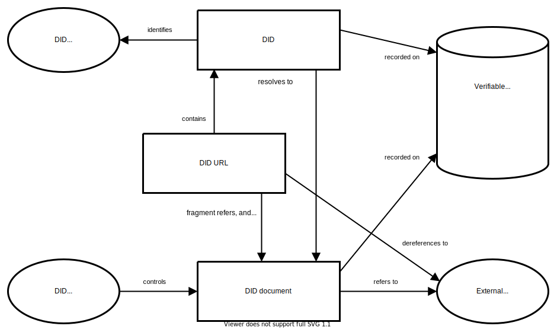
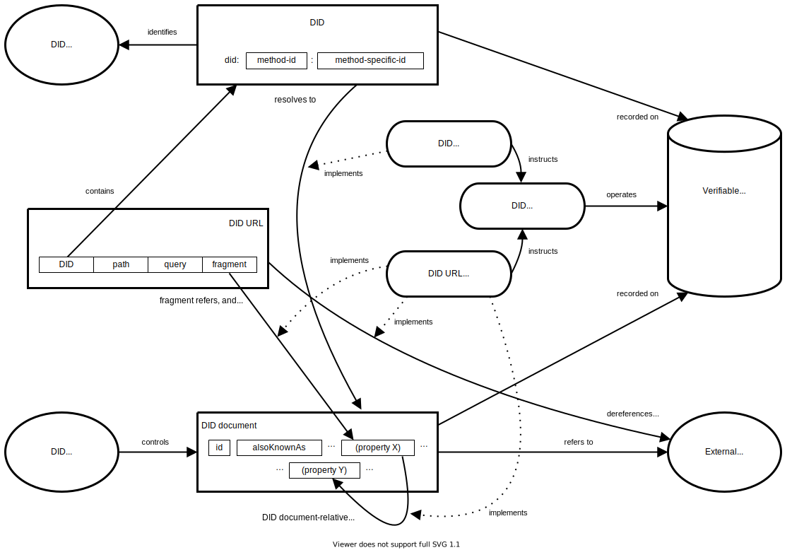

Decentralized identifiers (DIDs) are a new type of identifier that
enables verifiable, decentralized digital identity. A DID refers to any
subject (e.g., a person, organization, thing, data model, abstract entity, etc.)
as determined by the controller of the DID. In contrast to
typical, federated identifiers, DIDs have been designed so that they may
be decoupled from centralized registries, identity providers, and certificate
authorities. Specifically, while other parties might be used to help enable the
discovery of information related to a DID, the design enables the
controller of a DID to prove control over it without requiring permission
from any other party. DIDs are URIs that associate a DID
subject with a DID document allowing trustable interactions
associated with that subject.
This document specifies the DID syntax, a common data model, core properties,
serialized representations, DID operations, and an explanation of the process
of resolving DIDs to the resources that they represent.
The W3C Decentralized Identifier Working Group has published this document as a
W3C Candidate Recommendation and is requesting that software developers and DID
Method specification authors provide experimental implementations designed to
test the implementability of all of the features in this document.
To exit the W3C Candidate Recommendation phase, the W3C DID Working Group will
require two things: 1) for normative statements that are machine testable, at
least two interoperable implementations per feature, and 2) for normative
statements that are not machine testable, at least two demonstrations of
implementation per feature. A feature is defined as one or more functionally
related normative statements in the specification.
At present, there exist
103
experimental DID Method specifications, 32 experimental DID Method driver
implementations, a Candidate Recommendation test suite that determines
whether or not a given implementation is conformant with this specification
and 44 implementations submitted to the conformance test suite.
Readers are advised to heed the DID Core issues and DID Core Test Suite
issues that each contain the latest list of concerns and proposed changes
that might result in alterations to this specification.
As individuals and organizations, many of us use globally unique identifiers in
a wide variety of contexts. They serve as communications addresses (telephone
numbers, email addresses, usernames on social media), ID numbers (for passports,
drivers licenses, tax IDs, health insurance), and product identifiers (serial
numbers, barcodes, RFIDs). URIs (Uniform Resource Identifiers) are used for
resources on the Web and each web page you view in a browser has a globally
unique URL (Uniform Resource Locator).
The vast majority of these globally unique identifiers are not under our
control. They are issued by external authorities that decide who or what they
refer to and when they can be revoked. They are useful only in certain contexts
and recognized only by certain bodies not of our choosing. They might
disappear or cease to be valid with the failure of an organization. They might
unnecessarily reveal personal information. In many cases, they can be
fraudulently replicated and asserted by a malicious third-party, which is
more commonly known as "identity theft".
The Decentralized Identifiers (DIDs) defined in this specification are a new
type of globally unique identifier. They are designed to enable individuals and
organizations to generate their own identifiers using systems they trust. These
new identifiers enable entities to prove control over them by authenticating
using cryptographic proofs such as digital signatures.
Since the generation and assertion of Decentralized Identifiers is
entity-controlled, each entity can have as many DIDs as necessary to maintain
their desired separation of identities, personas, and interactions. The use of
these identifiers can be scoped appropriately to different contexts. They
support interactions with other people, institutions, or systems that require
entities to identify themselves, or things they control, while providing control
over how much personal or private data should be revealed, all without depending
on a central authority to guarantee the continued existence of the identifier.
These ideas are explored in the DID Use Cases document [[DID-USE-CASES]].
This specification does not presuppose any particular technology or cryptography
to underpin the generation, persistence, resolution, or interpretation of DIDs.
For example, implementers can create Decentralized Identifiers based on
identifiers registered in federated or centralized identity management systems.
Indeed, almost all types of identifier systems can add support for DIDs. This
creates an interoperability bridge between the worlds of centralized, federated,
and decentralized identifiers. This also enables implementers to design specific
types of DIDs to work with the computing infrastructure they trust, such as
distributed ledgers, decentralized file systems, distributed databases, and
peer-to-peer networks.
This specification is for:
Anyone that wants to understand the core architectural principles that
are the foundation for Decentralized Identifiers;
Software developers that want to produce and consume Decentralized Identifiers
and their associated data formats;
Systems integrators that want to understand how to use Decentralized
Identifiers in their software and hardware systems;
Specification authors that want to create new DID infrastructures, known as DID
methods, that conform to the ecosystem described by this document.
In addition to this specification, readers might find the
Use Cases and Requirements for Decentralized Identifiers [[DID-USE-CASES]]
document useful.
A Simple Example
A DID is a simple text string consisting of three parts: 1) the
did URI scheme identifier, 2) the identifier for the DID
method, and 3) the DID method-specific identifier.
A simple example of a decentralized identifier (DID)
{
"@context": [
"https://www.w3.org/ns/did/v1",
"https://w3id.org/security/suites/ed25519-2020/v1"
]
"id": "did:example:123456789abcdefghi",
"authentication": [{
// used to authenticate as did:...fghi
"id": "did:example:123456789abcdefghi#keys-1",
"type": "Ed25519VerificationKey2020",
"controller": "did:example:123456789abcdefghi",
"publicKeyMultibase": "zH3C2AVvLMv6gmMNam3uVAjZpfkcJCwDwnZn6z3wXmqPV"
}]
}
Design Goals
Decentralized Identifiers are a component of larger systems, such as the
Verifiable Credentials ecosystem [[VC-DATA-MODEL]], which influenced the design
goals for this specification. The design goals for Decentralized Identifiers
are summarized here.
Goal
Description
Decentralization
Eliminate the requirement for centralized authorities or single point failure in
identifier management, including the registration of globally unique
identifiers, public verification keys, services, and other information.
Control
Give entities, both human and non-human, the power to directly control their
digital identifiers without the need to rely on external authorities.
Privacy
Enable entities to control the privacy of their information, including minimal,
selective, and progressive disclosure of attributes or other data.
Security
Enable sufficient security for requesting parties to depend on DID
documents for their required level of assurance.
Proof-based
Enable DID controllers to provide cryptographic proof when interacting
with other entities.
Discoverability
Make it possible for entities to discover DIDs for other entities, to
learn more about or interact with those entities.
Interoperability
Use interoperable standards so DID infrastructure can make use of
existing tools and software libraries designed for interoperability.
Portability
Be system- and network-independent and enable entities to use their digital
identifiers with any system that supports DIDs and DID methods.
Simplicity
Favor a reduced set of simple features to make the technology easier to
understand, implement, and deploy.
Extensibility
Where possible, enable extensibility provided it does not greatly hinder
interoperability, portability, or simplicity.
Architecture Overview
This section provides a basic overview of the major components of
Decentralized Identifier architecture.

Overview of DID architecture and the relationship of the basic components.
See also: narrative description.
Six internally-labeled shapes appear in the diagram, with labeled arrows
between them, as follows. In the center of the diagram is a rectangle labeled
DID URL, containing small typewritten text "did:example:123/path/to/rsrc". At
the center top of the diagram is a rectangle labeled, "DID", containing small
typewritten text "did:example:123". At the top left of the diagram is an oval,
labeled "DID Subject". At the bottom center of the diagram is a rectangle
labeled, "DID document". At the bottom left is an oval, labeled, "DID
Controller". On the center right of the diagram is a two-dimensional rendering
of a cylinder, labeled, "Verifiable Data Registry".
From the top of the "DID URL" rectangle, an arrow, labeled "contains", extends
upwards, pointing to the "DID" rectangle. From the bottom of the "DID URL"
rectangle, an arrow, labeled "refers, and
dereferences, to", extends downward, pointing to the
"DID document" rectangle. An arrow from the "DID" rectangle, labeled
"resolves to", points down to the "DID document"
rectangle. An arrow from the "DID" rectangle, labeled "refers to", points left
to the "DID subject" oval. An arrow from the "DID controller" oval, labeled
"controls", points right to the "DID document" rectangle. An arrow from the
"DID" rectangle, labeled "recorded on", points downards to the right, to the
"Verifiable Data Registry" cylinder. An arrow from the "DID document" rectangle,
labeled "recorded on", points upwards to the right to the "Verifiable Data
Registry" cylinder.
DIDs and DID URLs
A Decentralized Identifier, or DID, is a URI composed of three
parts: the scheme did:, a method identifier, and a unique,
method-specific identifier specified by the DID method. DIDs are
resolvable to DID documents. A DID URL extends the syntax of a
basic DID to incorporate other standard URI components such as
path, query, and fragment in order to locate a particular
resource—for example, a cryptographic public key inside a DID
document, or a resource external to the DID document.
These concepts are elaborated upon in and .
DID subjects
The subject of a DID is, by definition, the entity identified by the
DID. The DID subject might also be the DID controller.
Anything can be the subject of a DID: person, group, organization,
thing, or concept. This is further defined in .
DID controllers
The controller of a DID is the entity (person, organization, or
autonomous software) that has the capability—as defined by a DID
method—to make changes to a DID document. This capability is
typically asserted by the control of a set of cryptographic keys used by
software acting on behalf of the controller, though it might also be asserted
via other mechanisms. Note that a DID might have more than one
controller, and the DID subject can be the DID controller, or one
of them. This concept is documented in .
Verifiable data registries
In order to be resolvable to DID documents, DIDs are typically
recorded on an underlying system or network of some kind. Regardless of the
specific technology used, any such system that supports recording DIDs
and returning data necessary to produce DID documents is called a
verifiable data registry. Examples include distributed ledgers,
decentralized file systems, databases of any kind, peer-to-peer networks, and
other forms of trusted data storage. This concept is further elaborated upon in
.
DID documents
DID documents contain information associated with a DID. They
typically express verification methods, such as cryptographic public
keys, and services relevant to interactions with the DID subject.
The generic properties supported in a DID document are specified in . A DID document can be serialized to a byte
stream (see ). The properties present in
a DID document can be updated according to the applicable operations
outlined in .
DID methods
DID methods are the mechanism by which a particular type of DID
and its associated DID document are created, resolved, updated, and
deactivated. DID methods are defined using separate DID method
specifications as defined in .
DID resolvers and DID resolution
A DID resolver is a system component that takes a DID as input and
produces a conforming DID document as output. This process is called
DID resolution. The steps for resolving a specific type of DID are
defined by the relevant DID method specification. The process of DID
resolution is elaborated upon in .
This document contains examples that contain JSON and JSON-LD content.
Some of these examples contain characters that are invalid, such as inline
comments (//) and the use of ellipsis (...) to denote
information that adds little value to the example. Implementers are cautioned to
remove this content if they desire to use the information as valid JSON
or JSON-LD.
Some examples contain terms, both property names and values, that are not
defined in this specification. These are indicated with a comment (//
external (property name|value)). Such terms, when used in a DID
document, are expected to be registered in the DID Specification Registries
[[?DID-SPEC-REGISTRIES]] with links to both a formal definition and a JSON-LD
context.
Interoperability of implementations for DIDs and DID documents is
tested by evaluating an implementation's ability to create and parse DIDs
and DID documents that conform to this specification. Interoperability
for producers and consumers of DIDs and DID documents is provided
by ensuring the DIDs and DID documents conform. Interoperability
for DID method specifications is provided by the details in each DID
method specification. It is understood that, in the same way that a web
browser is not required to implement all known URI schemes, conformant
software that works with DIDs is not required to implement all known
DID methods. However, all implementations of a given DID method
are expected to be interoperable for that method.
A conforming DID is any concrete expression of the rules specified in
which complies with relevant normative statements in
that section.
A conforming DID document is any concrete expression of the data
model described in this specification which complies with the relevant normative
statements in and . A
serialization format for the conforming document is deterministic,
bi-directional, and lossless, as described in .
A conforming producer is any algorithm realized as software and/or
hardware that generates conforming DIDs or conforming DID
Documents and complies with the relevant normative statements in .
A conforming consumer is any algorithm realized as software and/or
hardware that consumes conforming DIDs or conforming DID documents
and complies with the relevant normative statements in .
A conforming DID resolver is any algorithm realized as software
and/or hardware that complies with the relevant normative statements in
.
A conforming DID URL dereferencer is any algorithm realized as
software and/or hardware that complies with the relevant normative statements in
.
A conforming DID method is any specification that complies with the
relevant normative statements in .
Terminology
In addition to the terminology above, this specification also uses terminology
from the [[INFRA]] specification to formally define the data model. When [[INFRA]] terminology is used, such as
string, set, and map, it is linked directly to that specification.
Identifier
This section describes the formal syntax for DIDs and DID URLs.
The term "generic" is used to differentiate the syntax defined here from syntax
defined by specificDID methods in their respective
specifications. The creation processes, and their timing, for DIDs and
DID URLs are described in and
.
DID Syntax
The generic DID scheme is a URI scheme conformant with
[[!RFC3986]]. The ABNF definition can be found below, which uses the syntax in
[[!RFC5234]] and the corresponding definitions for ALPHA and
DIGIT. All other rule names not defined in the ABNF below are
defined in [[RFC3986]]. All DIDs MUST conform to the
DID Syntax ABNF Rules.
The following is the ABNF definition using the syntax in [[!RFC5234]]. It builds
on the did scheme defined in . The path-abempty, query, and fragment components are
defined in [[!RFC3986]]. All DID URLs MUST conform to the
DID URL Syntax ABNF Rules. DID methods can further restrict these
rules, as described in .
The DID URL Syntax ABNF Rules
did-url = did path-abempty [ "?" query ] [ "#" fragment ]
Although the semicolon (;) character can be used according to the
rules of the DID URL syntax, future versions of this specification may
use it as a sub-delimiter for parameters as described in [[?MATRIX-URIS]]. To
avoid future conflicts, developers ought to refrain from using it.
Path
A DID path is identical to a generic URI path and conforms to the
path-abempty ABNF rule in RFC 3986, section 3.3. As with
URIs, path semantics can be specified by DID Methods, which in
turn might enable DID controllers to further specialize those semantics.
did:example:123456/path
Query
A DID query is identical to a generic URI query and conforms to
the query ABNF rule in RFC 3986, section 3.4. This syntax
feature is elaborated upon in .
A DID fragment is used as a method-independent reference into a DID
document or external resource. Some examples of DID fragment
identifiers are shown below.
In order to maximize interoperability, implementers are urged to ensure that
DID fragments are interpreted in the same way across
representations (see ). For example, while
JSON Pointer [[?RFC6901]] can be used in a DID fragment, it will not be
interpreted in the same way across non-JSON representations.
Additional semantics for fragment identifiers, which are compatible with and
layered upon the semantics in this section, are described for JSON-LD
representations in . For information
about how to dereference a DID fragment, see .
DID Parameters
The DID URL syntax supports a simple format for parameters based on the
query component described in . Adding a DID
parameter to a DID URL means that the parameter becomes part of the
identifier for a resource.
Some DID parameters are completely independent of of any specific DID
method and function the same way for all DIDs. Other DID parameters
are not supported by all DID methods. Where optional parameters are
supported, they are expected to operate uniformly across the DID methods
that do support them. The following table provides common DID parameters that
function the same way across all DID methods. Support for all
DID Parameters is OPTIONAL.
It is generally expected that DID URL dereferencer implementations will
reference [[?DID-RESOLUTION]] for additional implementation details. The scope
of this specification only defines the contract of the most common
query parameters.
Identifies a specific version of a DID document to be resolved (the
version ID could be sequential, or a UUID, or method-specific).
If present, the associated value MUST be an ASCII string.
versionTime
Identifies a certain version timestamp of a DID document to be resolved.
That is, the DID document that was valid for a DID at a certain
time. If present, the associated value
MUST be an ASCII string which is a valid XML
datetime value, as defined in section 3.3.7 of W3C XML Schema Definition Language
(XSD) 1.1 Part 2: Datatypes [[XMLSCHEMA11-2]]. This datetime value MUST be
normalized to UTC 00:00:00 and without sub-second decimal precision.
For example: 2020-12-20T19:17:47Z.
hl
A resource hash of the DID document to add integrity protection, as
specified in [[?HASHLINK]]. This parameter is non-normative.
If present, the associated value MUST be an
ASCII string.
Implementers as well as DID method specification authors might use
additional DID parameters that are not listed here. For maximum
interoperability, it is RECOMMENDED that DID parameters use the DID
Specification Registries mechanism [[?DID-SPEC-REGISTRIES]], to avoid collision
with other uses of the same DID parameter with different semantics.
DID parameters might be used if there is a clear use case where the parameter
needs to be part of a URL that references a resource with more
precision than using the DID alone. It is expected that DID parameters
are not used if the same functionality can be expressed by passing
input metadata to a DID resolver. Additional considerations for
processing these parameters are discussed in [[?DID-RESOLUTION]].
The DID resolution and the DID URL dereferencing functions can
be influenced by passing input metadata to a DID resolver that are
not part of the DID URL (see ). This is comparable to
HTTP, where certain parameters could either be included in an HTTP URL, or
alternatively passed as HTTP headers during the dereferencing process. The
important distinction is that DID parameters that are part of the DID
URL should be used to specify what resource is being
identified, whereas input metadata that is not part of the DID URL
should be use to control how that resource is resolved or
dereferenced.
Relative DID URLs
A relative DID URL is any URL value in a DID document that does
not start with did:<method-name>:<method-specific-id>. More
specifically, it is any URL value that does not start with the ABNF defined in
. The URL is expected to reference
a resource in the same DID document. Relative DID URLs MAY
contain relative path components, query parameters, and fragment identifiers.
When resolving a relative DID URL reference, the algorithm specified in
RFC3986 Section 5: Reference Resolution
MUST be used. The base URI value is the DID that is
associated with the DID subject, see . The
scheme is did. The authority is a
combination of <method-name>:<method-specific-id>, and the
path, query, and fragment
values are those defined in , , and , respectively.
{
"@context": [
"https://www.w3.org/ns/did/v1",
"https://w3id.org/security/suites/ed25519-2020/v1"
]
"id": "did:example:123456789abcdefghi",
"verificationMethod": [{
"id": "did:example:123456789abcdefghi#key-1",
"type": "Ed25519VerificationKey2020", // external (property value)
"controller": "did:example:123456789abcdefghi",
"publicKeyMultibase": "zH3C2AVvLMv6gmMNam3uVAjZpfkcJCwDwnZn6z3wXmqPV"
}, ...],
"authentication": [
// a relative DID URL used to reference a verification method above
"#key-1"
]
}
In the example above, the relative DID URL value will be transformed to
an absolute DID URL value of
did:example:123456789abcdefghi#key-1.
Data Model
This specification defines a data model that can be used to express DID
documents and DID document data structures, which can then be serialized
into multiple concrete representations. This section provides a
high-level description of the data model, descriptions of the ways different
types of properties are expressed in the data model, and instructions for
extending the data model.
A DID document consists of a map of entries, where each entry consists of a
key/value pair. The DID document data model contains at least two
different classes of entries. The first class of entries is called properties,
and is specified in section . The second class
is made up of representation-specific entries, and is specified in section .
The diagram is titled, "Entries in the DID Document map". A dotted grey line
runs horizontally through the center of the diagram. The space above the line
is labeled "Properties", and the space below it, "Representation-specific
entries". Six labeled rectangles appear in the diagram, three lying above the
dotted grey line and three below it. A large green rectangle, labeled "DID
Specification Registries", encloses the four leftmost rectangles (upper left,
upper center, lower left, and lower center). The two leftmost rectangles
(upper left and lower left) are outlined in blue and labeled in blue, as
follows. The upper left rectangle is labeled "Core Properties", and contains
text "id, alsoKnownAs, controller, authentication, verificationMethod, service,
serviceEndpoint, ...". The lower left rectangle is labeled "Core
Representation-specific Entries", and contains text "@context". The four
rightmost rectangles (upper center, upper right, lower center, and lower right)
are outlined in grey and labeled in black, as follows. The upper center
rectangle is labeled, "Property Extensions", and contains text
"ethereumAddress". The lower center rectangle is labeled,
"Representation-specific Entry Extensions", and contains no other text. The
upper right rectangle is labeled, "Unregistered Property Extensions", and
contains text "foo". The lower right rectangle is labeled "Unregistered
Representation-specific Entry Extensions", and contains text "%YAML, xmlns".
All entry keys in the DID document data model are strings. All entry values are expressed using one
of the abstract data types in the table below, and each representation
specifies the concrete serialization format of each data type.
A finite ordered sequence of key/value pairs, with no key appearing twice as
specified in [[INFRA]]. A map is sometimes referred to as an
ordered map in [[INFRA]].
A finite ordered sequence of items that does not contain the same item twice
as specified in [[INFRA]]. A set is sometimes referred to as an
ordered set in [[INFRA]].
datetime
A date and time value that is capable of losslessly expressing all values
expressible by a dateTime as specified in
[XMLSCHEMA11-2].
A sequence of code units often used to represent human readable language
as specified in [[INFRA]].
integer
A real number without a fractional component as specified in
[XMLSCHEMA11-2]. To maximize
interoperability, implementers are urged to heed the advice regarding
integers in RFC8259, Section 6: Numbers.
double
A value that is often used to approximate arbitrary real numbers as specified
in [XMLSCHEMA11-2]. To maximize
interoperability, implementers are urged to heed the advice regarding
doubles in RFC8259, Section 6: Numbers.
A value that is used to indicate the lack of a value as defined in [[INFRA]].
As a result of the data model being defined using
terminology from [[INFRA]], property values which can contain more than one
item, such as lists, maps and sets, are explicitly ordered. All list-like
value structures in [[INFRA]] are ordered, whether or not that order is
significant. For the purposes of this specification, unless otherwise stated, map and set ordering is not important and
implementations are not expected to produce or consume deterministically ordered
values.
Extensibility
The data model supports two types of extensibility.
For maximum interoperability, it is RECOMMENDED that extensions use the
W3C DID Specification Registries mechanism [[?DID-SPEC-REGISTRIES]]. The use of
this mechanism for new properties or other extensions is the only specified
mechanism that ensures that two different representations will be able to
work together.
Representations MAY define other extensibility mechanisms, including ones
that do not require the use of the DID Specification Registries. Such extension
mechanisms SHOULD support lossless conversion into any other conformant
representation. Extension mechanisms for a representation SHOULD
define a mapping of all properties and representation syntax into the data model and its type system.
It is always possible for two specific implementations to agree out-of-band to
use a mutually understood extension or representation that is not
recorded in the DID Specification Registries [[?DID-SPEC-REGISTRIES]];
interoperability between such implementations and the larger ecosystem will be
less reliable.
Core Properties
A DID is associated with a DID document.
DID documents are expressed using the
data model and can be serialized into a
representation.
The following sections define the properties in a DID document,
including whether these properties are required or optional. These properties
describe relationships between the DID subject and the value of the
property.
The following tables contain informative references for the core properties
defined by this specification, with expected values, and whether or not they are
required. The property names in the tables are linked to the normative
definitions and more detailed descriptions of each property.
The property names id, type, and
controller can be present in maps of different types
with possible differences in constraints.
A string that conforms to the rules of
[[RFC3986]] for URIs, a map, or a
set composed of a one or more
strings that conform to the rules of
[[RFC3986]] for URIs and/or maps.
DID method specifications can create intermediate representations of a
DID document that do not contain the id property,
such as when a DID resolver is performing DID resolution.
However, the fully resolved DID document always contains a valid
id property.
Note that authorization provided by the value of controller is
separate from authentication as described in .
This is particularly important for key recovery in the case of cryptographic key
loss, where the DID subject no longer has access to their keys, or key
compromise, where the DID controller's trusted third parties need to
override malicious activity by an attacker. See for information related to threat models
and attack vectors.
Also Known As
A DID subject can have multiple identifiers for different purposes, or
at different times. The assertion that two or more DIDs (or other types
of URI) refer to the same DID subject can be made using the
alsoKnownAs property.
alsoKnownAs
The alsoKnownAs property is OPTIONAL. If present, the value MUST
be a set where each item in the
set is a URI conforming to [[RFC3986]].
This relationship is a statement that the subject of this identifier is
also identified by one or more other identifiers.
Applications might choose to consider two identifiers related by
alsoKnownAs to be equivalent if the
alsoKnownAs relationship is reciprocated in the reverse
direction. It is best practice not to consider them equivalent in the
absence of this inverse relationship. In other words, the presence of an
alsoKnownAs assertion does not prove that this assertion
is true. Therefore, it is strongly advised that a requesting party obtain
independent verification of an alsoKnownAs assertion.
Given that the DID subject might use different identifiers for different
purposes, an expectation of strong equivalence between the two identifiers, or
merging the information of the two corresponding DID documents, is not
necessarily appropriate, even with a reciprocal relationship.
Verification Methods
A DID document can express verification methods, such as
cryptographic public keys, which can be used to authenticate or authorize
interactions with the DID subject or associated parties. For example, a
cryptographic public key can be used as a verification method with
respect to a digital signature; in such usage, it verifies that the signer
could use the associated cryptographic private key. Verification methods
might take many parameters. An example of this is a set of five cryptographic
keys from which any three are required to contribute to a cryptographic
threshold signature.
verificationMethod
The verificationMethod property is OPTIONAL. If present, the value
MUST be a set of verification
methods, where each verification method is expressed using a map. The verification methodmap MUST include the id,
type, controller, and specific verification material
properties that are determined by the value of type and are defined
in . A verification method MAY
include additional properties. Verification methods SHOULD be registered
in the DID Specification Registries [[?DID-SPEC-REGISTRIES]].
id
The value of the id property for a verification
method MUST be a string that conforms to the
rules in Section .
type
The value of the type property MUST be a string that references exactly one verification
method type. In order to maximize global interoperability, the
verification method type SHOULD be registered in the DID Specification
Registries [[?DID-SPEC-REGISTRIES]].
controller
The value of the controller property MUST be a string that conforms to the rules in .
The semantics of the controller property are the same when the
subject of the relationship is the DID document as when the subject of
the relationship is a verification method, such as a cryptographic public
key. Since a key can't control itself, and the key controller cannot be inferred
from the DID document, it is necessary to explicitly express the identity
of the controller of the key. The difference is that the value of
controller for a verification method is not
necessarily a DID controller. DID controllers are expressed
using the controller property at the highest level of the
DID document (the topmost map in the
data model); see .
To increase the likelihood of interoperable implementations, this specification
limits the number of formats for expressing verification material in a DID
document. The fewer formats that implementers have to
implement, the more likely it will be that they will support all of them. This
approach attempts to strike a delicate balance between ease of implementation
and supporting formats that have historically had broad deployment.
Two supported verification material properties are listed below:
publicKeyJwk
The publicKeyJwk property is OPTIONAL. If present, the value MUST
be a map representing a JSON Web Key that
conforms to [[RFC7517]]. The map MUST NOT
contain "d", or any other members of the private information class as described
in Registration
Template. It is RECOMMENDED that verification methods that use JWKs
[[RFC7517]] to represent their public keys use the value of kid as
their fragment identifier. It is RECOMMENDED that JWK
kid values are set to the public key fingerprint [[RFC7638]]. See
the first key in for
an example of a public key with a compound key identifier.
publicKeyMultibase
The publicKeyMultibase property is OPTIONAL. This feature is
non-normative. If present, the value MUST be a string representation of a [[?MULTIBASE]] encoded
public key.
Note that the [[?MULTIBASE]] specification is not yet a standard and is
subject to change. There might be some use cases for this data format
where publicKeyMultibase is defined, to allow for
expression of public keys, but privateKeyMultibase
is not defined, to protect against accidental leakage of secret keys.
A verification method MUST NOT contain multiple verification material
properties for the same material. For example, expressing key material in a
verification method using both publicKeyJwk and
publicKeyMultibase at the same time is prohibited.
If the value of a verification method property is a map, the verification method has been
embedded and its properties can be accessed directly. However, if the value is a
URL string, the verification method has
been included by reference and its properties will need to be retrieved from
elsewhere in the DID document or from another DID document. This
is done by dereferencing the URL and searching the resulting resource for a
verification methodmap with an
id property whose value matches the URL.
{
...
"authentication": [
// this key is referenced and might be used by// more than one verification relationship
"did:example:123456789abcdefghi#keys-1",
// this key is embedded and may *only* be used for authentication
{
"id": "did:example:123456789abcdefghi#keys-2",
"type": "Ed25519VerificationKey2020", // external (property value)
"controller": "did:example:123456789abcdefghi",
"publicKeyMultibase": "zH3C2AVvLMv6gmMNam3uVAjZpfkcJCwDwnZn6z3wXmqPV"
}
],
...
}
The DID document does not express revoked keys using a verification
relationship. If a referenced verification method is not in the latest
DID Document used to dereference it, then that verification method is
considered invalid or revoked. Each DID method specification is expected
to detail how revocation is performed and tracked.
The following sections define several useful verification relationships.
A DID document MAY include any of these, or other properties, to
express a specific verification relationship. In order to maximize global
interoperability, any such properties used SHOULD be registered in the DID
Specification Registries [[?DID-SPEC-REGISTRIES]].
Authentication
The authenticationverification relationship is used to
specify how the DID subject is expected to be authenticated, for
purposes such as logging into a website or engaging in any sort of
challenge-response protocol.
authentication
The authentication property is OPTIONAL. If present, the associated
value MUST be a set of one or more
verification methods. Each verification method MAY be embedded or
referenced.
{
"@context": [
"https://www.w3.org/ns/did/v1",
"https://w3id.org/security/suites/ed25519-2020/v1"
],
"id": "did:example:123456789abcdefghi",
...
"authentication": [
// this method can be used to authenticate as did:...fghi
"did:example:123456789abcdefghi#keys-1",
// this method is *only* approved for authentication, it may not// be used for any other proof purpose, so its full description is// embedded here rather than using only a reference
{
"id": "did:example:123456789abcdefghi#keys-2",
"type": "Ed25519VerificationKey2020",
"controller": "did:example:123456789abcdefghi",
"publicKeyMultibase": "zH3C2AVvLMv6gmMNam3uVAjZpfkcJCwDwnZn6z3wXmqPV"
}
],
...
}
If authentication is established, it is up to the DID method or other
application to decide what to do with that information. A particular DID
method could decide that authenticating as a DID controller is
sufficient to, for example, update or delete the DID document. Another
DID method could require different keys, or a different verification
method entirely, to be presented in order to update or delete the DID
document than that used to authenticate. In other words, what is done
after the authentication check is out of scope for the data model; DID methods and applications are
expected to define this themselves.
This is useful to any authentication verifier that needs to check to
see if an entity that is attempting to authenticate is, in fact,
presenting a valid proof of authentication. When a verifier receives
some data (in some protocol-specific format) that contains a proof that was made
for the purpose of "authentication", and that says that an entity is identified
by the DID, then that verifier checks to ensure that the proof
can be verified using a verification method (e.g., public key) listed
under authentication in the DID Document.
The assertionMethodverification relationship is used to
specify how the DID subject is expected to express claims, such as for
the purposes of issuing a Verifiable Credential [[?VC-DATA-MODEL]].
assertionMethod
The assertionMethod property is OPTIONAL. If present, the
associated value MUST be a set of
one or more verification methods. Each verification method MAY be
embedded or referenced.
{
"@context": [
"https://www.w3.org/ns/did/v1",
"https://w3id.org/security/suites/ed25519-2020/v1"
],
"id": "did:example:123456789abcdefghi",
...
"assertionMethod": [
// this method can be used to assert statements as did:...fghi
"did:example:123456789abcdefghi#keys-1",
// this method is *only* approved for assertion of statements, it is not// used for any other verification relationship, so its full description is// embedded here rather than using a reference
{
"id": "did:example:123456789abcdefghi#keys-2",
"type": "Ed25519VerificationKey2020", // external (property value)
"controller": "did:example:123456789abcdefghi",
"publicKeyMultibase": "zH3C2AVvLMv6gmMNam3uVAjZpfkcJCwDwnZn6z3wXmqPV"
}
],
...
}
Key Agreement
The keyAgreementverification relationship is used to
specify how an entity can generate encryption material in order to transmit
confidential information intended for the DID subject, such as for
the purposes of establishing a secure communication channel with the recipient.
keyAgreement
The keyAgreement property is OPTIONAL. If present, the associated
value MUST be a set of one or more
verification methods. Each verification method MAY be embedded or
referenced.
An example of when this property is useful is when encrypting a message intended
for the DID subject. In this case, the counterparty uses the
cryptographic public key information in the verification method to wrap a
decryption key for the recipient.
{
"@context": "https://www.w3.org/ns/did/v1",
"id": "did:example:123456789abcdefghi",
...
"keyAgreement": [
// this method can be used to perform key agreement as did:...fghi
"did:example:123456789abcdefghi#keys-1",
// this method is *only* approved for key agreement usage, it will not// be used for any other verification relationship, so its full description is// embedded here rather than using only a reference
{
"id": "did:example:123#zC9ByQ8aJs8vrNXyDhPHHNNMSHPcaSgNpjjsBYpMMjsTdS",
"type": "X25519KeyAgreementKey2019", // external (property value)
"controller": "did:example:123",
"publicKeyMultibase": "z9hFgmPVfmBZwRvFEyniQDBkz9LmV7gDEqytWyGZLmDXE"
}
],
...
}
The capabilityInvocation property is OPTIONAL. If present, the
associated value MUST be a set of
one or more verification methods. Each verification method MAY be
embedded or referenced.
An example of when this property is useful is when a DID subject needs to
access a protected HTTP API that requires authorization in order to use it. In
order to authorize when using the HTTP API, the DID subject
uses a capability that is associated with a particular URL that is
exposed via the HTTP API. The invocation of the capability could be
expressed in a number of ways, e.g., as a digitally signed
message that is placed into the HTTP Headers.
The server providing the HTTP API is the verifier of the capability and
it would need to verify that the verification method referred to by the
invoked capability exists in the capabilityInvocation
property of the DID document. The verifier would also check to make sure
that the action being performed is valid and the capability is appropriate for
the resource being accessed. If the verification is successful, the server has
cryptographically determined that the invoker is authorized to access the
protected resource.
{
"@context": [
"https://www.w3.org/ns/did/v1",
"https://w3id.org/security/suites/ed25519-2020/v1"
],
"id": "did:example:123456789abcdefghi",
...
"capabilityInvocation": [
// this method can be used to invoke capabilities as did:...fghi
"did:example:123456789abcdefghi#keys-1",
// this method is *only* approved for capability invocation usage, it will not// be used for any other verification relationship, so its full description is// embedded here rather than using only a reference
{
"id": "did:example:123456789abcdefghi#keys-2",
"type": "Ed25519VerificationKey2020", // external (property value)
"controller": "did:example:123456789abcdefghi",
"publicKeyMultibase": "zH3C2AVvLMv6gmMNam3uVAjZpfkcJCwDwnZn6z3wXmqPV"
}
],
...
}
Capability Delegation
The capabilityDelegationverification relationship is used
to specify a mechanism that might be used by the DID subject to delegate
a cryptographic capability to another party, such as delegating the authority
to access a specific HTTP API to a subordinate.
capabilityDelegation
The capabilityDelegation property is OPTIONAL. If present, the
associated value MUST be a set of
one or more verification methods. Each verification method MAY be
embedded or referenced.
An example of when this property is useful is when a DID controller
chooses to delegate their capability to access a protected HTTP API to a party
other than themselves. In order to delegate the capability, the DID
subject would use a verification method associated with the
capabilityDelegationverification relationship to
cryptographically sign the capability over to another DID subject. The
delegate would then use the capability in a manner that is similar to the
example described in .
{
"@context": [
"https://www.w3.org/ns/did/v1",
"https://w3id.org/security/suites/ed25519-2020/v1"
],
"id": "did:example:123456789abcdefghi",
...
"capabilityDelegation": [
// this method can be used to perform capability delegation as did:...fghi
"did:example:123456789abcdefghi#keys-1",
// this method is *only* approved for granting capabilities; it will not// be used for any other verification relationship, so its full description is// embedded here rather than using only a reference
{
"id": "did:example:123456789abcdefghi#keys-2",
"type": "Ed25519VerificationKey2020", // external (property value)
"controller": "did:example:123456789abcdefghi",
"publicKeyMultibase": "zH3C2AVvLMv6gmMNam3uVAjZpfkcJCwDwnZn6z3wXmqPV"
}
],
...
}
Due to privacy concerns, revealing public information through services,
such as social media accounts, personal websites, and email addresses, is
discouraged. Further exploration of privacy concerns can be found in and . The
information associated with services is often service specific. For
example, the information associated with an encrypted messaging service can
express how to initiate the encrypted link before messaging begins.
Services are expressed using the service property,
which is described below:
service
The service property is OPTIONAL. If present, the associated value
MUST be a set of services,
where each service is described by a map.
Each servicemap MUST contain
id, type, and
serviceEndpoint properties. Each service extension MAY
include additional properties and MAY further restrict the properties associated
with the extension.
id
The value of the id property MUST be a URI conforming to
[[RFC3986]]. A conforming producer MUST NOT produce
multiple service entries with the same id.
A conforming consumer MUST produce an error if it detects
multiple service entries with the same id.
type
The value of the type property MUST be a string or a set of strings. In order to maximize interoperability,
the service type and its associated properties SHOULD be
registered in the DID Specification Registries [[?DID-SPEC-REGISTRIES]].
serviceEndpoint
The value of the serviceEndpoint property MUST be a string, a map, or
a set composed of one or more strings and/or maps. All string
values MUST be valid URIs conforming to [[RFC3986]] and normalized
according to the Normalization and Comparison
rules in RFC3986 and to any normalization rules in its applicable URI
scheme specification.
For more information regarding privacy and security considerations related
to services see , , , and .
A concrete serialization of a DID document in this specification is
called a representation. A representation is created by
serializing the data model through a process called
production. A representation is transformed into the data model through a process called
consumption. The production and consumption
processes enable the conversion of information from one representation to
another. This specification defines representations for JSON and JSON-LD,
and developers can use any other representation, such as XML or
YAML, that is capable of expressing the data model.
The following sections define the general rules for production and
consumption, as well as the JSON and JSON-LD representations.
Production and Consumption
In addition to the representations defined in this specification,
implementers can use other representations, providing each such
representation is properly specified (including rules for
interoperable handling of properties not listed in the DID Specification
Registries [[?DID-SPEC-REGISTRIES]]). See
for more information.
A representation MUST define deterministic production and consumption
rules for all data types specified in .
A representation MUST be uniquely associated with an IANA-registered
Media Type.
A representation MUST define fragment processing rules for its Media
Type that are conformant with the fragment processing rules defined in
.
A representation SHOULD use the lexical representation of data model data types. For example, JSON and JSON-LD use
the XML Schema dateTime lexical serialization to represent
datetimes. A representation MAY choose to serialize the data model data types using a different lexical
serializations as long as the consumption process back into the data model is lossless. For example, some CBOR-based
representations express datetime values using integers to
represent the number of seconds since the Unix epoch.
A representation MAY define representation-specific entries that are
stored in a representation-specific entries map
for use during the production and consumption process. These
entries are used when consuming or producing to aid in ensuring lossless
conversion.
In order to maximize interoperability, representation specification
authors SHOULD register their representation in the DID Specification
Registries [[?DID-SPEC-REGISTRIES]].
A conforming producer MUST serialize all entries in the DID
documentdata model, and the
representation-specific entries map, that do not
have explicit processing rules for the representation being produced
using only the representation's data type processing rules and
return the serialization after the production process completes.
A conforming consumer MUST detect any representation-specific
entry across all known representations and place the entry into a
representation-specific entries map which is
returned after the consumption process completes. A list of
all known representation-specific entries is available in the
DID Specification Registries [[?DID-SPEC-REGISTRIES]].
The upper left quadrant of the diagram contains a rectangle with dashed grey
outline, containing two blue-outlined rectangles, one above the other.
The upper, larger rectangle is labeled, in blue, "Core Properties",
and contains the following INFRA notation:
The lower, smaller rectangle is labeled, in blue, "Core Representation-specific
Entries (JSON-LD)", and contains the following monospaced INFRA notation:
«[ "@context" → "https://www.w3.org/ns/did/v1" ]»
From the grey-outlined rectangle, three pairs of arrows extend to three
different black-outlined rectangles, one on the upper right of the diagram, one
in the lower right, and one in the lower left. Each pair of arrows consists of
one blue arrow pointing from the grey-outlined rectangle to the respective
black-outlined rectangle, labeled "produce", and one red arrow pointing in the
reverse direction, labeled "consume". The black-outlined rectangle in the upper
right is labeled "application/did+cbor", and contains hexadecimal data. The
rectangle in the lower right is labeled "application/did+json", and contains
the following JSON data:
An implementation is expected to convert between representations by using
the consumption rules on the source representation resulting in the data model and then using the production rules
to serialize data model to the target representation,
or any other mechanism that results in the same target representation.
The DID document, DID document data structures, and
representation-specific entries map MUST be
serialized to the JSON representation according to the following
production rules:
A JSON Object, where each entry is
serialized as a member of the JSON Object with the entry key as a JSON String member name and the entry value
according to its type, as defined in this table.
All entries of a DID document MUST be included in the root JSON Object. Entries MAY contain additional
data substructures subject to the value representation rules in the list above.
When serializing a DID document, a conforming producer MUST
specify a media type of application/did+json to downstream
applications such as described in .
A map, where each member of the JSON
Object is added as an entry to the map. Each entry key is set as the
JSON Object member name. Each entry value is set by converting the JSON Object
member value according to the JSON representation type as defined in this table.
Since order is not specified by JSON Objects, no insertion order is guaranteed.
A list, where each value of the JSON Array is
added to the list in order, converted based on the JSON representation type of
the array value, as defined in this table.
A set, where each value of
the JSON Array is added to the set in order, converted based on the JSON
representation type of the array value, as defined in this table.
In addition to using the JSON representationproduction rules,
JSON-LD production MUST include the representation-specific
@context entry. The serialized value of
@context MUST be the JSON
Stringhttps://www.w3.org/ns/did/v1, or a JSON Array where the first item is the JSON Stringhttps://www.w3.org/ns/did/v1 and the subsequent items are
serialized according to the JSON representationproduction
rules.
All implementers creating conforming producers that produce JSON-LD
representations are advised to ensure that their algorithms
produce valid JSON-LD [[JSON-LD11]] documents. Invalid JSON-LD documents will
cause JSON-LD processors to halt and report errors.
In order to achieve interoperability across different representations,
all JSON-LD Contexts and their terms SHOULD be registered in the DID
Specification Registries [[?DID-SPEC-REGISTRIES]].
Use of the media type application/did+ld+json is pending
clarification over the registration of
media types with multiple suffixes. Depending on the outcome of the
discussion with the IETF Application and Real Time (ART) Media Type group,
the media type might change, sections involving the media type might change,
or other changes related to the media type might be applied to this
specification. See also
Issue 208.
All implementers creating conforming consumers that consume JSON-LD
representations are advised to ensure that their algorithms only accept
valid JSON-LD [[JSON-LD11]] documents. Invalid JSON-LD documents will cause
JSON-LD processors to halt and report errors.
This section defines the inputs and outputs of DID resolution and DID
URL dereferencing. Their exact implementation is out of scope for this
specification, but some considerations for implementers are discussed in
[[?DID-RESOLUTION]].
The DID resolution functions resolve a DID into a DID
document by using the "Read" operation of the applicable DID method
as described in . The details of how this
process is accomplished are outside the scope of this specification, but all
conforming DID resolvers implement the functions below, which have the
following abstract forms:
The resolve function returns the DID document in its
abstract form (a map). The
resolveRepresentation function returns a byte stream of the DID
Document formatted in the corresponding representation.
The upper middle part of the diagram contains a rectangle with dashed grey outline, containing two
blue-outlined rectangles, one above the other, as follows.
The upper, larger rectangle is labeled, in blue, "Core Properties", and contains the following [INFRA]
notation:
The lower, smaller rectangle is labeled, in blue, "Core Representation-specific Entries (JSON-LD)", and
contains the following monospaced [INFRA] notation:
«[ "@context" → "https://www.w3.org/ns/did/v1" ]»
From the grey-outlined rectangle, three pairs of arrows extend to three
different black-outlined rectangles, aligned in a horizontal row side-by-side, in the bottom half
of the diagram. Each pair of arrows consists of
one blue arrow pointing from the grey-outlined rectangle to the respective
black-outlined rectangle, labeled "produce", and one red arrow pointing in the
reverse direction, labeled "consume". The first black-outlined rectangle in the row
is labeled "application/did+ld+json", and contains
the following JSON-LD data:
The third rectangle in the row is labeled "application/did+cbor", and contains hexadecimal data.
In the left part of the diagram, in the middle, there is a box, with black outline and light gray
background. This box is labeled "VERIFIABLE DATA REGISTRY" and contains a symbol representing a graph
with nodes and arcs. From this box, one arrow, labeled "resolve()", extends upwards and points to the
top half of the diagram where the grey-outlined rectangle is located. Another arrow, labeled
"resolveRepresentation()", extends downwards and points to the bottom half of the diagram, where the
row of three black-outlined rectangles is located.
The input variables
of the resolve and resolveRepresentation functions are
as follows:
did
This is the DID to resolve. This input is REQUIRED and the value MUST
be a conformant DID as defined in .
resolutionOptions
A metadata structure containing properties
defined in . This input is
REQUIRED, but the structure MAY be empty.
A metadata structure consisting of values
relating to the results of the DID resolution process which typically
changes between invocations of the resolve and
resolveRepresentation functions, as it represents data about the
resolution process itself. This structure is REQUIRED, and in the case of an
error in the resolution process, this MUST NOT be empty. This metadata is
defined by . If
resolveRepresentation was called, this structure MUST contain a
contentType property containing the Media Type of the
representation found in the didDocumentStream. If the resolution is
not successful, this structure MUST contain an error property
describing the error.
didDocument
If the resolution is successful, and if the resolve function was
called, this MUST be a DID document abstract data model (a map) as described in that
is capable of being transformed into a conforming DID Document
(representation), using the production rules specified by the representation.
The value of id in the resolved DID document MUST
match the DID that was resolved. If the resolution is unsuccessful, this
value MUST be empty.
didDocumentStream
If the resolution is successful, and if the resolveRepresentation
function was called, this MUST be a byte stream of the resolved DID
document in one of the conformant
representations. The byte stream might then be
parsed by the caller of the resolveRepresentation function into a
data model, which can in turn be validated and
processed. If the resolution is unsuccessful, this value MUST be an empty
stream.
didDocumentMetadata
If the resolution is successful, this MUST be a metadata structure. This structure contains
metadata about the DID document contained in the didDocument
property. This metadata typically does not change between invocations of the
resolve and resolveRepresentation functions unless the
DID document changes, as it represents metadata about the DID
document. If the resolution is unsuccessful, this output MUST be an empty metadata structure. Properties defined by this
specification are in .
Conforming DID resolver implementations do not alter the signature of
these functions in any way. DID resolver implementations might map the
resolve and resolveRepresentation functions to a
method-specific internal function to perform the actual DID resolution
process. DID resolver implementations might implement and expose
additional functions with different signatures in addition to the
resolve and resolveRepresentation functions specified
here.
DID Resolution Options
The possible properties within this structure and their possible values are
registered in the DID Specification Registries [[?DID-SPEC-REGISTRIES]]. This
specification defines the following common properties.
accept
The Media Type of the caller's preferred representation of the DID
document. The Media Type MUST be expressed as an ASCII string. The DID resolver implementation SHOULD use this
value to determine the representation contained in the returned
didDocumentStream if such a representation is supported and
available. This property is OPTIONAL for the resolveRepresentation
function and MUST NOT be used with the resolve function.
DID Resolution Metadata
The possible properties within this structure and their possible values are
registered in the DID Specification Registries [[?DID-SPEC-REGISTRIES]]. This
specification defines the following DID resolution metadata properties:
contentType
The Media Type of the returned didDocumentStream. This property is
REQUIRED if resolution is successful and if the
resolveRepresentation function was called.
This property MUST NOT
be present if the resolve function was called. The value of this
property MUST be an ASCII string that is the Media
Type of the conformant representations. The
caller of the resolveRepresentation function MUST use this value
when determining how to parse and process the didDocumentStream
returned by this function into the data model.
error
The error code from the resolution process. This property is REQUIRED when there
is an error in the resolution process. The value of this property MUST be a
single keyword ASCII string. The possible property
values of this field SHOULD be registered in the DID Specification Registries
[[?DID-SPEC-REGISTRIES]]. This specification defines the following
common error values:
invalidDid
The DID supplied to the DID resolution function does not conform
to valid syntax. (See .)
This error code is returned if the representation requested via the
accept input metadata property is not supported by the DID
method and/or DID resolver implementation.
DID Document Metadata
The possible properties within this structure and their possible values SHOULD
be registered in the DID Specification Registries [[?DID-SPEC-REGISTRIES]].
This specification defines the following common properties.
created
DID document metadata SHOULD include a created property to
indicate the timestamp of the Create operation.
The value of the property MUST be a string
formatted as an XML Datetime
normalized to UTC 00:00:00 and without sub-second decimal precision. For
example: 2020-12-20T19:17:47Z.
updated
DID document metadata SHOULD include an updated property to
indicate the timestamp of the last Update
operation for the document version which was resolved. The value of the
property MUST follow the same formatting rules as the created
property. The updated property is omitted if an Update operation
has never been performed on the DID document. If an updated
property exists, it can be the same value as the created property
when the difference between the two timestamps is less than one second.
deactivated
If a DID has been deactivated,
DID document metadata MUST include this property with the boolean value
true. If a DID has not been deactivated, this property is OPTIONAL,
but if included, MUST have the boolean value false.
nextUpdate
DID document metadata MAY include a nextUpdate property if
the resolved document version is not the latest version of the document. It
indicates the timestamp of the next Update
operation. The value of the property MUST follow the same formatting rules
as the created property.
versionId
DID document metadata SHOULD include a versionId property to
indicate the version of the last Update
operation for the document version which was resolved. The value of the
property MUST be an ASCII string.
nextVersionId
DID document metadata MAY include a nextVersionId property
if the resolved document version is not the latest version of the document. It
indicates the version of the next Update
operation. The value of the property MUST be an ASCII string.
equivalentId
A DID method can define different forms of a DID that are
logically equivalent. An example is when a DID takes one form prior to
registration in a verifiable data registry and another form after such
registration. In this case, the DID method specification might need to
express one or more DIDs that are logically equivalent to the resolved
DID as a property of the DID document. This is the purpose of the
equivalentId property.
DID document metadata MAY include an equivalentId property.
If present, the value MUST be a set where each item is a
string that conforms to the rules in Section . The relationship is a statement that each
equivalentId value is logically equivalent to the
id property value and thus refers to the same DID subject.
Each equivalentId DID value MUST be produced by, and a form
of, the same DID method as the id property value. (e.g.,
did:example:abc == did:example:ABC)
A conforming DID method specification MUST guarantee that each
equivalentId value is logically equivalent to the
id property value.
A requesting party is expected to retain the values from the id and
equivalentId properties to ensure any subsequent
interactions with any of the values they contain are correctly handled as
logically equivalent (e.g., retain all variants in a database so an interaction
with any one maps to the same underlying account).
If a requesting party does not retain the values from the id and
equivalentId properties and ensure any subsequent
interactions with any of the values they contain are correctly handled as
logically equivalent, there might be negative or unexpected issues that
arise. Implementers are strongly advised to observe the
directives related to this metadata property.
canonicalId
The canonicalId property is identical to the
equivalentId property except: a) it is associated with a
single value rather than a set, and b) the DID is defined to be
the canonical ID for the DID subject within the scope of the containing
DID document.
DID document metadata MAY include a canonicalId property.
If present, the value MUST be a string that conforms to the rules in Section . The relationship is a statement that the
canonicalId value is logically equivalent to the
id property value and that the canonicalId
value is defined by the DID method to be the canonical ID for the DID
subject in the scope of the containing DID document. A
canonicalId value MUST be produced by, and a form of, the
same DID method as the id property value. (e.g.,
did:example:abc == did:example:ABC).
A conforming DID method specification MUST guarantee that the
canonicalId value is logically equivalent to the
id property value.
A requesting party is expected to use the canonicalId value
as its primary ID value for the DID subject and treat all other
equivalent values as secondary aliases (e.g., update corresponding primary
references in their systems to reflect the new canonical ID directive).
If a resolving party does not use the canonicalId value as
its primary ID value for the DID subject and treat all other equivalent values
as secondary aliases, there might be negative or unexpected issues that arise
related to user experience. Implementers are strongly advised to observe the
directives related to this metadata property.
DID URL Dereferencing
The DID URL dereferencing function dereferences a DID URL into a
resource with contents depending on the DID URL's components,
including the DID method, method-specific identifier, path, query, and
fragment. This process depends on DID resolution of the DID
contained in the DID URL. DID URL dereferencing might involve
multiple steps (e.g., when the DID URL being dereferenced includes a fragment),
and the function is defined to return the final resource after all steps are
completed. The details of how this process is accomplished are outside the scope
of this specification. The following figure depicts the relationship described
above.
The top left part of the diagram contains a rectangle with black outline, labeled "DID".
The bottom left part of the diagram contains a rectangle with black outline, labeled "DID URL".
This rectangle contains four smaller black-outlined rectangles, aligned in a horizontal row adjacent to
each other. These smaller rectangles are labeled, in order, "DID", "path", "query", and "fragment.
The top right part of the diagram contains a rectangle with black outline, labeled "DID document".
This rectangle contains three smaller black-outlined rectangles. These smaller rectangles are
labeled "id", "(property X)", and "(property Y)", and are surrounded by multiple series of three
dots (ellipses). A curved black arrow, labeled "DID document - relative fragment dereference", extends
from the rectangle labeled "(property X)", and points to the rectangle labeled "(property Y)".
The bottom right part of the diagram contains an oval shape with black outline, labeled "Resource".
A black arrow, labeled "resolves to a DID document", extends from the rectangle in the top left part of
the diagram, labeled "DID", and points to the rectangle in the top right part of diagram, labeled
"DID document".
A black arrow, labeled "refers to", extends from the rectangle in the top right part of the diagram,
labeled "DID document", and points to the oval shape in the bottom right part of diagram, labeled
"Resource".
A black arrow, labeled "contains", extends from the small rectangle labeled "DID" inside the
rectangle in the bottom left part of the diagram, labeled "DID URL", and points to the rectangle
in the top left part of diagram, labeled "DID".
A black arrow, labeled "dereferences to a DID document", extends from the rectangle in the bottom left
part of the diagram, labeled "DID URL", and points to the rectangle in the top right part of diagram,
labeled "DID document".
A black arrow, labeled "dereferences to a resource", extends from the rectangle in the bottom left
part of the diagram, labeled "DID URL", and points to the oval shape in the bottom right part of diagram,
labeled "Resource".
All conforming DID resolvers implement
the following function which has the following abstract form:
While it is valid for any didUrl to be passed to a DID URL
dereferencer, implementers are expected to refer to [[?DID-RESOLUTION]] to
further understand common patterns for how a DID URL is expected
to be dereferenced.
dereferencingOptions
A metadata structure consisting of input
options to the dereference function in addition to the
didUrl itself. Properties defined by this specification are in . This input is REQUIRED, but the
structure MAY be empty.
This function returns multiple values, and no limitations
are placed on how these values are returned together.
The return values of the dereference include
dereferencingMetadata, contentStream,
and contentMetadata:
dereferencingMetadata
A metadata structure consisting of values
relating to the results of the DID URL dereferencing process. This
structure is REQUIRED, and in the case of an error in the dereferencing process,
this MUST NOT be empty. Properties defined by this specification are in . If the dereferencing is not
successful, this structure MUST contain an error property
describing the error.
contentStream
If the dereferencing function was called and successful, this MUST
contain a resource corresponding to the DID URL. The
contentStream MAY be a resource such as a DID
document that is serializable in one of the conformant
representations, a Verification
Method, a service, or any other resource format that
can be identified via a Media Type and obtained through the resolution process.
If the dereferencing is unsuccessful, this value MUST be empty.
contentMetadata
If the dereferencing is successful, this MUST be a
metadata structure, but the structure MAY be empty. This structure contains
metadata about the contentStream. If the contentStream
is a DID document, this MUST be a didDocumentMetadata structure as
described in DID Resolution. If the dereferencing is unsuccessful, this
output MUST be an empty metadata structure.
Conforming DID URL dereferencing implementations do not alter the
signature of these functions in any way. DID URL dereferencing
implementations might map the dereference function to a
method-specific internal function to perform the actual DID URL
dereferencing process. DID URL dereferencing implementations might
implement and expose additional functions with different signatures in addition
to the dereference function specified here.
DID URL Dereferencing Options
The possible properties within this structure and their possible values SHOULD
be registered in the DID Specification Registries [[?DID-SPEC-REGISTRIES]].
This specification defines the following common properties for
dereferencing options:
accept
The Media Type that the caller prefers for contentStream. The Media
Type MUST be expressed as an ASCII string. The
DID URL dereferencing implementation SHOULD use this value to determine
the contentType of the representation contained in the
returned value if such a representation is supported and available.
DID URL Dereferencing Metadata
The possible properties within this structure and their possible values are
registered in the DID Specification Registries [[?DID-SPEC-REGISTRIES]]. This
specification defines the following common properties.
contentType
The Media Type of the returned contentStream SHOULD be expressed
using this property if dereferencing is successful. The Media
Type value MUST be expressed as an ASCII string.
error
The error code from the dereferencing process. This property is REQUIRED when
there is an error in the dereferencing process. The value of this property
MUST be a single keyword expressed as an ASCII
string. The possible property values of this field SHOULD be registered in
the DID Specification Registries [[?DID-SPEC-REGISTRIES]]. This specification
defines the following common error values:
The DID URL dereferencer was unable to find the
contentStream resulting from this dereferencing request.
Metadata Structure
Input and output metadata is often involved during the DID Resolution,
DID URL dereferencing, and other DID-related processes. The structure
used to communicate this metadata MUST be a map
of properties. Each property name MUST be a string. Each property value MUST be a string, map, list, set,
boolean, or
null. The values within any complex data
structures such as maps and lists MUST be one of these data types as well.
All metadata property definitions registered in the DID Specification
Registries [[?DID-SPEC-REGISTRIES]] MUST define the value type, including any
additional formats or restrictions to that value (for example, a string
formatted as a date or as a decimal integer). It is RECOMMENDED that property
definitions use strings for values. The entire metadata structure MUST be
serializable according to the JSON
serialization rules in the [[INFRA]] specification. Implementations MAY
serialize the metadata structure to other data formats.
All implementations of functions that use metadata structures as either input or
output are able to fully represent all data types described here in a
deterministic fashion. As inputs and outputs using metadata structures are
defined in terms of data types and not their serialization, the method for
representation is internal to the implementation of the function and is
out of scope of this specification.
The following example demonstrates a JSON-encoded metadata structure that
might be used as DID
resolution input metadata.
{
"accept": "application/did+ld+json"
}
This example corresponds to a metadata structure of the following format:
«[
"accept" → "application/did+ld+json"
]»
The next example demonstrates a JSON-encoded metadata structure that might be
used as DID resolution
metadata if a DID was not found.
{
"error": "notFound"
}
This example corresponds to a metadata structure of the following format:
«[
"error" → "notFound"
]»
The next example demonstrates a JSON-encoded metadata structure that might be
used as DID document metadata
to describe timestamps associated with the DID document.
A DID method defines how implementers can realize the features
described by this specification. DID methods are often associated with a
particular verifiable data registry. New DID methods are defined
in their own specifications to enable interoperability between different
implementations of the same DID method.
Conceptually, the relationship between this specification and a DID
method specification is similar to the relationship between the IETF generic
URI specification [[?RFC3986]] and a specific URI scheme
[[?IANA-URI-SCHEMES]], such as the http scheme [[?RFC7230]]. In
addition to defining a specific DID scheme, a DID method
specification also defines the mechanisms for creating, resolving, updating, and
deactivating DIDs and DID documents using a specific type of
verifiable data registry. It also documents all implementation
considerations related to DIDs as well as Security and Privacy
Considerations.
This section specifies the requirements for authoring DID method
specifications.
Method Syntax
The requirements for all DID method specifications when defining the
method-specific DID Syntax are as follows:
A DID method specification MUST define exactly one method-specific DID
scheme that is identified by exactly one method name as specified by the
method-name rule in .
The DID method specification MUST specify how to generate the
method-specific-id component of a DID.
The DID method specification MUST define sensitivity and normalization of
the value of the method-specific-id.
The method-specific-id value MUST be unique within a DID
method. The method-specific-id value itself might be globally
unique.
Any DID generated by a DID method MUST be globally unique.
To reduce the chances of method-name conflicts, a DID method
specification SHOULD be registered in the DID Specification Registries
[[?DID-SPEC-REGISTRIES]].
A DID method MAY define multiple method-specific-id formats.
The method-specific-id format MAY include colons. The use of
colons MUST comply syntactically with the method-specific-id ABNF
rule.
A DID method specification MAY specify ABNF rules for DID paths
that are more restrictive than the generic rules in .
A DID method specification MAY specify ABNF rules for DID queries
that are more restrictive than the generic rules in this section.
A DID method specification MAY specify ABNF rules for DID
fragments that are more restrictive than the generic rules in this section.
The meaning of colons in the method-specific-id is entirely
method-specific. Colons might be used by DID methods for establishing
hierarchically partitioned namespaces, for identifying specific instances or
parts of the verifiable data registry, or for other purposes.
Implementers are advised to avoid assuming any meanings or
behaviors associated with a colon that are generically applicable to all
DID methods.
Method Operations
The requirements for all DID method specifications when defining the
method operations are as follows:
A DID method specification MUST define how authorization is performed to
execute all operations, including any necessary cryptographic processes.
The Security Considerations section MUST document the following forms of attack
for the DID operations defined in the DID method specification:
eavesdropping, replay, message insertion, deletion, modification, denial of
service, amplification, and man-in-the-middle. Other known
forms of attack SHOULD also be documented.
The Security Considerations section MUST discuss residual risks, such as the
risks from compromise in a related protocol, incorrect implementation, or cipher
after threat mitigation was deployed.
The Security Considerations section MUST provide integrity protection and update
authentication for all operations required by Section .
If authentication is involved, particularly user-host authentication, the
security characteristics of the authentication method MUST be clearly
documented.
The Security Considerations section MUST discuss the policy mechanism by which
DIDs are proven to be uniquely assigned.
Method-specific endpoint authentication MUST be discussed. Where DID
methods make use of DLTs with varying network topology, sometimes
offered as light node or thin client
implementations to reduce required computing resources, the security assumptions
of the topology available to implementations of the DID method MUST be
discussed.
If a protocol incorporates cryptographic protection mechanisms, the DID
method specification MUST clearly indicate which portions of the data are
protected and by what protections, and it SHOULD give an indication of the
sorts of attacks to which the cryptographic protection is susceptible. Some
examples are integrity only, confidentiality, and endpoint authentication.
Data which is to be held secret (keying material, random seeds, and so on)
SHOULD be clearly labeled.
DID method specifications SHOULD explain and specify the implementation
of signatures on DID documents, if applicable.
Where DID methods use peer-to-peer computing resources, such as with all
known DLTs, the expected burdens of those resources SHOULD be discussed
in relation to denial of service.
DID methods that introduce new authentication service
types, as described in , SHOULD consider the
security requirements of the supported authentication protocol.
Privacy Requirements
The requirements for all DID method specifications when authoring the
Privacy Considerations section are:
The DID method specification's Privacy Considerations section MUST
discuss any subsection of Section 5 of [[?RFC6973]] that could apply in a
method-specific manner. The subsections to consider are: surveillance, stored
data compromise, unsolicited traffic, misattribution, correlation,
identification, secondary use, disclosure, and exclusion.
Security Considerations
This section contains a variety of security considerations that people using
Decentralized Identifiers are advised to consider before deploying this
technology in a production setting. DIDs are designed to operate under
the threat model used by many IETF standards and documented
in [[?RFC3552]]. This section elaborates upon a number of the considerations
in [[?RFC3552]], as well as other considerations that are unique to DID
architecture.
Choosing DID Resolvers
The DID Specification Registries [[?DID-SPEC-REGISTRIES]] contains an
informative list of DID method names and their corresponding DID
method specifications. Implementers need to bear in mind that there is no
central authority to mandate which DID method specification is to be used
with any specific DID method name. If there is doubt on whether or not a
specific DID resolver implements a DID method correctly, the DID
Specification Registries can be used to look up the registered specification
and make an informed decision regarding which DID resolver
implementation to use.
Proving Control and Binding
Binding an entity in the digital world or the physical world to a DID, to
a DID document, or to cryptographic material requires, the use of
security protocols contemplated by this specification. The following sections
describe some possible scenarios and how an entity therein might prove control
over a DID or a DID document for the purposes of authentication or
authorization.
Proving Control of a DID and/or DID Document
Proving control over a DID and/or a DID Document is useful when
updating either in a verifiable data registry or authenticating with
remote systems. Cryptographic digital signatures and verifiable
timestamps enable certain security protocols related to DID documents
to be cryptographically verifiable. For these purposes, this specification
defines useful verification relationships in and . The
secret cryptographic material associated with the verification methods
can be used to generate a cryptographic digital signature as a part of an
authentication or authorization security protocol.
Some DID methods allow digital signatures and other proofs to be
included in the DID document or a .
However, such proofs by themselves do not necessarily prove control over a
DID, or guarantee that the DID document is the correct one for
the DID. In order to obtain
the correct DID document and verify control over a DID, it is
necessary to perform the DID resolution process as defined by the
DID method.
It can be useful to express a binding of a DID to a person's or
organization's physical identity in a way that is provably asserted by a
trusted authority, such as a government. This specification provides
the verification relationship for these
purposes. This feature can enable interactions that are private and can be
considered legally enforceable under one or more jurisdictions; establishing
such bindings has to be carefully balanced against privacy considerations (see
).
The process of binding a DID to something in the physical world, such as
a person or an organization — for example, by using verifiable
credentials with the same subject as that DID — is contemplated
by this specification and further defined in the Verifiable Credentials Data
Model [[VC-DATA-MODEL]].
Authentication Service Endpoints
If a DID document publishes a service intended for
authentication or authorization of the DID subject (see Section ), it is the responsibility of the service
endpoint provider, subject, or requesting party to comply with the
requirements of the authentication protocols supported at that service
endpoint.
Non-Repudiation
Non-repudiation of DIDs and DID document updates is supported if:
The subject is monitoring for unauthorized updates as elaborated upon in
.
The subject has had adequate opportunity to revert malicious updates according
to the authorization mechanism for the DID method.
Notification of DID Document Changes
One mitigation against unauthorized changes to a DID document is
monitoring and actively notifying the DID subject when there are changes.
This is analogous to helping prevent account takeover on conventional
username/password accounts by sending password reset notifications to the email
addresses on file.
In the case of a DID, there is no intermediary registrar or account
provider to generate such notifications. However, if the verifiable data
registry on which the DID is registered directly supports change
notifications, a subscription service can be offered to DID controllers.
Notifications could be sent directly to the relevant service endpoints
listed in an existing DID.
If a DID controller chooses to rely on a third-party monitoring service
(other than the verifiable data registry itself), this introduces another
vector of attack.
Key and Signature Expiration
In a decentralized identifier architecture, there might not be
centralized authorities to enforce cryptographic material or cryptographic
digital signature expiration policies. Therefore, it is with supporting software
such as DID resolvers and verification libraries that requesting parties
validate that cryptographic material were not expired at the time they were
used. Requesting parties might employ their own expiration policies in addition
to inputs into their verification processes. For example, some requesting
parties might accept authentications from five minutes in the past, while others
with access to high precision time sources might require authentications to be
time stamped within the last 500 milliseconds.
There are some requesting parties that have legitimate needs to extend the use
of already-expired cryptographic material, such as verifying legacy
cryptographic digital signatures. In these scenarios, a requesting party might
instruct their verification software to ignore cryptographic key material
expiration or determine if the cryptographic key material was expired at the
time it was used.
Verification Method Rotation
Rotation is a management process that enables the secret cryptographic material
associated with an existing verification method to be deactivated or
destroyed once a new verification method has been added to the DID
document. Going forward, any new proofs that a controller would have
generated using the old secret cryptographic material can now instead be
generated using the new cryptographic material and can be verified using the
new verification method.
Rotation is a useful mechanism for protecting against verification method
compromise, since frequent rotation of a verification method by the controller
reduces the value of a single compromised verification method to an attacker.
Performing revocation immediately after rotation is useful for verification
methods that a controller designates for short-lived verifications, such as
those involved in encrypting messages and authentication.
The following considerations might be of use when contemplating the use of
verification method rotation:
When a verification method has been active for a long time, or used for
many operations, a controller might wish to perform a rotation.
Frequent rotation of a verification method might be frustrating for
parties that are forced to continuously renew or refresh associated credentials.
Proofs or signatures that rely on verification methods that are not
present in the latest version of a DID document are not impacted by
rotation. In these cases, verification software might require additional
information, such as when a particular verification method was
expected to be valid as well as access to a verifiable data registry
containing a historical record, to determine the validity of the proof or
signature. This option might not be available in all DID methods.
Revocation is a management process that enables the secret cryptographic
material associated with an existing verification method to be
deactivated such that it ceases to be a valid form of creating new
proofs of digital signatures.
Revocation is a useful mechanism for reacting to a verification method
compromise. Performing revocation immediately after rotation is useful for
verification methods that a controller designates for short-lived verifications,
such as those involved in encrypting messages and authentication.
Compromise of the secrets associated with a verification method allows
the attacker to use them according to the verification relationship
expressed by controller in the DID document, for example, for
authentication. The attacker's use of the secrets might be indistinguishable
from the legitimate controller's use starting from
the time the verification method was registered, to the time it was
revoked.
The following considerations might be of use when contemplating the use of
verification method revocation:
Verification method revocation can only be embodied in changes to
the latest version of a DID Document; it cannot retroactively adjust
previous versions.
As described in , absence of a verification
method is the only form of revocation that applies to all DID Methods
that support revocation.
If a verification method is no longer exclusively accessible to the
controller or parties trusted to act on behalf of the controller,
it is expected to be revoked immediately to reduce the risk of
compromises such as masquerading, theft, and fraud.
Revocation is expected to be understood as a controller expressing that
proofs or signatures associated with a revoked verification method
created after its revocation should be treated as invalid. It could also imply a
concern that existing proofs or signatures might have been created by an
attacker, but this is not necessarily the case. Verifiers, however, might still
choose to accept or reject any such proofs or signatures at their own
discretion.
Even if a verification method is present in a DID document,
additional information, such as a public key revocation certificate, or an
external allow or deny list, could be used to determine whether a
verification method has been revoked.
The day-to-day operation of any software relying on a compromised
verification method, such as an individual's operating system, antivirus,
or endpoint protection software, could be impacted when the verification
method is publicly revoked.
Revocation Semantics
Although verifiers might choose not to accept proofs or signatures from a
revoked verification method, knowing whether a verification was made with a
revoked verification method is trickier than it might seem. Some DID
methods provide the ability to look back at the state of a DID at a
point in time, or at a particular version of the DID document. When such
a feature is combined with a reliable way to determine the time or DID
version that existed when a cryptographically verifiable statement was made,
then revocation does not undo that statement. This can be the basis for using
DIDs to make binding commitments; for example, to sign a mortgage.
If these conditions are met, revocation is not retroactive; it only nullifies
future use of the method.
However, in order for such semantics to be safe, the second condition — an
ability to know what the state of the DID document was at the time the
assertion was made — is expected to apply. Without that guarantee, someone
could discover a revoked key and use it to make cryptographically verifiable
statements with a simulated date in the past.
Some DID methods only allow the retrieval of the current state of a
DID. When this is true, or when the state of a DID at the time of
a cryptographically verifiable statement cannot be reliably determined, then the
only safe course is to disallow any consideration of DID state with respect to
time, except the present moment. DID ecosystems that take this approach
essentially provide cryptographically verifiable statements as ephemeral tokens
that can be invalidated at any time by the DID controller.
Revocation in Trustless Systems
Trustless systems are those where all trust is derived from cryptographically
provable assertions, and more specifically, where no metadata outside of the
cryptographic system is factored into the determination of trust in the system.
To verify a signature of proof for a verification method which has been
revoked in a trustless system, a DID method needs to support either or
both of the `versionId` or `versionTime`, as well as both the `updated` and
`nextUpdate`, DID document metadata properties. A verifier can validate a
signature or proof of a revoked key if and only if all of the following are
true:
The proof or signature includes the `versionId` or `versionTime` of the DID
document that was used at the point the signature or proof was created.
The verifier can determine the point in time at which the signature or proof was
made; for example, it was anchored on a blockchain.
For the resolved DID document metadata, the `updated` timestamp is
before, and the `nextUpdate` timestamp is after, the point in time at which the
signature or proof was made.
In systems that are willing to admit metadata other than those constituting
cryptographic input, similar trust may be achieved -- but always on the
same basis where a careful judgment is made about whether a
DID document's content at the moment of a signing event
contained the expected content.
DID Recovery
Recovery is a reactive security measure whereby a controller that has
lost the ability to perform DID operations, such as through the loss of a
device, is able to regain the ability to perform DID operations.
The following considerations might be of use when contemplating the use of
DID recovery:
Performing recovery proactively on an infrequent but regular basis, can help to
ensure that control has not been lost.
It is considered a best practice to never reuse cryptographic material
associated with recovery for any other purposes.
Recovery is advised when a controller or services trusted to act on their
behalf no longer have the exclusive ability to perform DID operations as
described in .
DID method specifications might choose to enable support for a quorum of
trusted parties to facilitate recovery. Some of the facilities to do so are
suggested in .
Not all DID method specifications will recognize control from DIDs
registered using other DID methods and they might restrict third-party
control to DIDs that use the same method.
Access control and recovery in a DID method specification can also
include a time lock feature to protect against key compromise by maintaining a
second track of control for recovery.
There are currently no common recovery mechanisms that apply to all
DID methods.
The Role of Human-Friendly Identifiers
DIDs achieve global uniqueness without the need for a central
registration authority. This comes at the cost of human memorability.
Algorithms capable of generating globally unambiguous identifiers
produce random strings of characters that have no human meaning. This
trade-off is often referred to as
Zooko's
Triangle.
There are use cases where it is desirable to discover a DID when
starting from a human-friendly identifier. For example, a natural language
name, a domain name, or a conventional address for a DID controller,
such as a mobile telephone number, email address, social media username, or
blog URL. However, the problem of mapping human-friendly identifiers to
DIDs, and doing so in a way that can be verified and trusted, is
outside the scope of this specification.
Solutions to this problem are defined in separate specifications, such as
[[?DNS-DID]], that reference this specification. It is strongly recommended that
such specifications carefully consider the:
Numerous security attacks based on deceiving users about the true human-friendly
identifier for a target entity.
Privacy consequences of using human-friendly identifiers that are inherently
correlatable, especially if they are globally unique.
DIDs as Enhanced URNs
If desired by a DID controller, a DID or a DID URL is
capable of acting as persistent, location-independent resource identifier.
These sorts of identifiers
are classified as Uniform Resource Names (URNs) and are defined in [[RFC8141]].
DIDs are an enhanced form of URN that provide a
cryptographically secure, location-independent identifier for a digital
resource, while also providing metadata that enables retrieval. Due to the
indirection between the DID document and the DID itself, the
DID controller can adjust the actual location of the resource — or
even provide the resource directly — without adjusting the DID.
DIDs of this type can definitively verify that the resource retrieved is,
in fact, the resource identified.
A DID controller who intends to use a DID for this purpose is
advised to follow the security considerations in [[RFC8141]]. In particular:
The DID controller is expected to choose a DID method that
supports the controller's requirements for persistence. The Decentralized
Characteristics Rubric [[?DID-RUBRIC]] is one tool available to help
implementers decide upon the most suitable DID method.
The DID controller is expected to publish its operational policies so
requesting parties can determine the degree to which they can rely on the
persistence of a DID controlled by that DID controller. In the
absence of such policies, requesting parties are not expected to make any
assumption about whether a DID is a persistent identifier for the same
DID subject.
Immutability
Many cybersecurity abuses hinge on exploiting gaps between reality and the
assumptions of rational, good-faith actors. Immutability of DID documents
can provide some security benefits. Individual DID methods ought to
consider constraints that would eliminate behaviors or semantics they do not
need. The more locked down a DID method is, while providing the
same set of features, the less it can be manipulated by malicious actors.
As an example, consider that a single edit to a DID document can change
anything except the root id property of the document. But
is it actually desirable for a service to change its
type after it is defined? Or for a key to change its value? Or
would it be better to require a new id when certain
fundamental properties of an object change? Malicious takeovers of a website
often aim for an outcome where the site keeps its host name identifier,
but is subtly changed underneath. If certain properties of the site, such
as the ASN
associated with its IP address, were required by the specification to be
immutable, anomaly detection would be easier, and attacks would be much
harder and more expensive to carry out.
For DID methods tied to a global source of truth, a direct,
just-in-time lookup of the latest version of a DID document is always
possible. However, it seems likely that layers of cache might eventually sit
between a DID resolver and that source of truth. If they do, believing
the attributes of an object in the DID document to have a given state
when they are actually subtly different might invite exploits. This is
particularly true if some lookups are of a full DID document, and
others are of partial data where the larger context is assumed.
Encrypted Data in DID Documents
Encryption algorithms have been known to fail due to advances in cryptography
and computing power. Implementers are advised to assume that any encrypted data
placed in a DID document might eventually be made available in clear text
to the same audience to which the encrypted data is available. This is
particularly pertinent if the DID document is public.
Encrypting all or parts of a DID document is not an appropriate
means to protect data in the long term. Similarly, placing encrypted data in
a DID document is not an appropriate means to protect personal data.
Given the caveats above, if encrypted data is included in a DID document,
implementers are advised to not associate any correlatable information
that could be used to infer a relationship between the encrypted data
and an associated party. Examples of correlatable information include
public keys of a receiving party, identifiers to digital assets known to be
under the control of a receiving party, or human readable descriptions of a
receiving party.
Equivalence Properties
Given the equivalentId and canonicalId
properties are generated by DID methods themselves, the same security and
accuracy guarantees that apply to the resolved DID present in the
id field of a DID document also apply to these properties.
The alsoKnownAs property is not guaranteed to be an accurate
statement of equivalence, and should not be relied upon without performing
validation steps beyond the resolution of the DID document.
The equivalentId and canonicalId
properties express equivalence assertions to variants of a single DID
produced by the same DID method and can be trusted to the extent the
requesting party trusts the DID method and a conforming producer and
resolver.
The alsoKnownAs property permits an equivalence assertion to
URIs that are not governed by the same DID method and cannot be
trusted without performing verification steps outside of the governing DID
method. See additional guidance in .
As with any other security-related properties in the DID document,
parties relying on any equivalence statement in a DID document should
guard against the values of these properties being substituted by an attacker
after the proper verification has been performed. Any write access to a DID
document stored in memory or disk after verification has been performed is
an attack vector that might circumvent verification unless the DID
document is re-verified.
Content Integrity Protection
DID documents which include links to external machine-readable content
such as images, web pages, or schemas are vulnerable to tampering. It is
strongly advised that external links are integrity protected using solutions
such as a hashlink [[?HASHLINK]]. External links are to be avoided if they
cannot be integrity protected and the DID document's integrity is
dependent on the external link.
One example of an external link where the integrity of the DID document
itself could be affected is the JSON-LD Context [[JSON-LD]]. To protect against
compromise, DID document consumers are advised to cache local static
copies of JSON-LD contexts and/or verify the integrity of external contexts
against a cryptographic hash that is known to be associated with a safe
version of the external JSON-LD Context.
Persistence
DIDs are designed to be persistent such that a controller need not
rely upon a single trusted third party or administrator to maintain their
identifiers. In an ideal case, no administrator can take control away from the
controller, nor can an administrator prevent their identifiers' use for
any particular purpose such as authentication, authorization, and attestation.
No third party can act on behalf of a controller to remove or render
inoperable an entity's identifier without the controller's consent.
However, it is important to note that in all DID methods that enable
cryptographic proof-of-control, the means of proving control can always be
transferred to another party by transferring the secret cryptographic material.
Therefore, it is vital that systems relying on the persistence of an identifier
over time regularly check to ensure that the identifier is, in fact, still under
the control of the intended party.
Unfortunately, it is impossible to determine from the cryptography alone whether
or not the secret cryptographic material associated with a given
verification method has been compromised. It might well be that the
expected controller still has access to the secret cryptographic material
— and as such can execute a proof-of-control as part of a verification
process — while at the same time, a bad actor also has access to those
same keys, or to a copy thereof.
As such, cryptographic proof-of-control is expected to only be used as one
factor in evaluating the level of identity assurance required for high-stakes
scenarios. DID-based authentication provides much greater assurance than
a username and password, thanks to the ability to determine control over a
cryptographic secret without transmitting that secret between systems. However,
it is not infallible. Scenarios that involve sensitive, high value, or
life-critical operations are expected to use additional factors as appropriate.
In addition to potential ambiguity from use by different controllers, it
is impossible to guarantee, in general, that a given DID is being used in
reference to the same subject at any given point in time. It is technically
possible for the controller to reuse a DID for different subjects and,
more subtly, for the precise definition of the subject to either change over
time or be misunderstood.
For example, consider a DID used for a sole proprietorship, receiving
various credentials used for financial transactions. To the controller,
that identifier referred to the business. As the business grows, it eventually
gets incorporated as a Limited Liability Company. The controller
continues using that same DID, because to them the
DID refers to the business. However, to the state, the tax authority, and
the local municipality, the DID no longer refers to the same entity.
Whether or not the subtle shift in meaning matters to a credit provider or
supplier is necessarily up to them to decide. In many cases, as long as the
bills get paid and collections can be enforced, the shift is immaterial.
Due to these potential ambiguities, DIDs are to be considered valid
contextually rather than absolutely. Their persistence does not imply
that they refer to the exact same subject, nor that they are under the control
of the same controller. Instead, one needs to understand the context in
which the DID was created, how it is used, and consider the likely shifts
in their meaning, and adopt procedures and policies to address both potential
and inevitable semantic drift.
Level of Assurance
Additional information about the security context of authentication events is
often required for compliance reasons, especially in regulated areas such as the
financial and public sectors. This information is often referred to as a Level
of Assurance (LOA). Examples include the protection of secret cryptographic
material, the identity proofing process, and the form-factor of the
authenticator.
Payment services (PSD 2) and
eIDAS introduce such requirements to the security context. Level of
assurance frameworks are classified and defined by regulations and
standards such as
eIDAS, NIST 800-63-3 and ISO/IEC
29115:2013, including their requirements for the security context, and
making recommendations on how to achieve them. This might include strong user
authentication where FIDO2/WebAuthn can fulfill the
requirement.
Some regulated scenarios require the implementation of a specific level of
assurance. Since verification relationships such as assertionMethod and authentication might be
used in some of these situations, information about the applied security context
might need to be expressed and provided to a verifier. Whether and how
to encode this information in the DID document data model is out of scope
for this specification. Interested readers might note that 1) the information
could be transmitted using Verifiable Credentials [[?VC-DATA-MODEL]], and 2) the
DID document data model can be extended to incorporate this information
as described in , and where is applicable for such extensions.
Privacy Considerations
Since DIDs and DID documents are designed to be administered
directly by the DID controller(s), it is critically important to apply
the principles of Privacy by Design [[PRIVACY-BY-DESIGN]] to all aspects of the
decentralized identifier architecture. All seven of these principles
have been applied throughout the development of this specification. The design
used in this specification does not assume that there is a registrar, hosting
company, nor other intermediate service provider to recommend or apply
additional privacy safeguards. Privacy in this specification is preventive,
not remedial, and is an embedded default. The following sections cover privacy
considerations that implementers might find useful when building systems that
utilize decentralized identifiers.
Due diligence is expected to be taken around the use of URLs in service
endpoints to prevent leakage of personal data or correlation within a URL of
a service endpoint. For example, a URL that contains a username is
dangerous to include in a DID Document because the username is likely to
be human-meaningful in a way that can reveal information that the DID
subject did not consent to sharing. With the privacy architecture suggested
by this specification, personal data can be exchanged on a private, peer-to-peer
basis using communication channels identified and secured by verification
methods in DID documents. This also enables DID subjects and
requesting parties to implement the GDPRright to be
forgotten, because no personal data is written to an immutable
distributed ledger.
DID Correlation Risks
Like any type of globally unambiguous identifier, DIDs might be used for
correlation. DID controllers can mitigate this privacy risk by using
pairwise DIDs that are unique to each relationship; in effect, each
DID acts as a pseudonym. A pairwise DID need only be shared with
more than one party when correlation is explicitly desired. If pairwise
DIDs are the default, then the only need to publish a DID openly,
or to share it with multiple parties, is when the DID controller(s) and/or DID subject
explicitly desires public identification and correlation.
DID Document Correlation Risks
The anti-correlation protections of pairwise DIDs are easily defeated if
the data in the corresponding DID documents can be correlated. For
example, using identical verification methods or bespoke service
endpoints in multiple DID documents can provide as much correlation
information as using the same DID. Therefore, the DID document for
a pairwise DID also needs to use pairwise unique information, such as
ensuring that verification methods are unique to the pairwise
relationship.
It might seem natural to also use pairwise unique service endpoints in
the DID document for a pairwise DID. However, unique endpoints
allow all traffic between two DIDs to be isolated perfectly into unique
buckets, where timing correlation and similar analysis is easy. Therefore, a
better strategy for endpoint privacy might be to share an endpoint among a large
number of DIDs controlled by many different subjects (see ).
DID Subject Classification
It is dangerous to add properties to the DID document that can be used
to indicate, explicitly or through inference, what type or nature of
thing the DID subject is, particularly if the DID subject is a
person.
Not only do such properties potentially result in personal data (see
) or
correlatable data (see and ) being present in the
DID document, but they can be used for grouping particular DIDs
in such a way that they are included in or excluded from certain operations or
functionalities.
Including type information in a DID Document can
result in personal privacy harms even for DID Subjects that are
non-person entities, such as IoT devices. The aggregation of such
information around a DID Controller could serve as a form of
digital fingerprint and this is best avoided.
To minimize these risks, all properties in a DID document ought to be
for expressing cryptographic material, endpoints, or verification methods
related to using the DID.
Herd Privacy
When a DID subject is indistinguishable from others in the herd,
privacy is available. When the act of engaging privately with another party is
by itself a recognizable flag, privacy is greatly diminished.
DIDs and DID
methods need to work to improve herd privacy, particularly for those who
legitimately need it most. Choose technologies and human interfaces that
default to preserving anonymity and pseudonymity. To reduce digital
fingerprints, share common settings across requesting party
implementations, keep negotiated options to a minimum on wire protocols, use
encrypted transport layers, and pad messages to standard lengths.
Service Privacy
The ability for a controller to optionally express at least one
service endpoint in the DID document increases their control and
agency. Each additional endpoint in the DID document adds privacy risk
either due to correlation, such as across endpoint descriptions, or because the
services are not protected by an authorization mechanism, or both.
DID documents are often public and, since they are standardized, will be
stored and indexed efficiently by their very standards-based nature. This risk
is worse if DID documents are published to immutable verifiable data
registries. Access to a history of the DID documents referenced by a
DID represents a form of traffic analysis made more efficient through the
use of standards.
The degree of additional privacy risk caused by using multiple service
endpoints in one DID document can be difficult to estimate. Privacy
harms are typically unintended consequences. DIDs can refer to documents,
services, schemas, and other things that might be associated with
individual people, households, clubs, and employers — and correlation of
their service endpoints could become a powerful surveillance and
inference tool. An example of this potential harm can be seen when multiple
common country-level top level domains such as
https://example.co.uk might be used to infer the approximate
location of the DID subject with a greater degree of probability.
Maintaining Herd Privacy
The variety of possible endpoints makes it particularly challenging to maintain
herd privacy, in which no information about the DID subject is leaked
(see ).
First, because service endpoints might be specified as URIs, they could
unintentionally leak personal information because of the architecture of the
service. For example, a service endpoint of
http://example.com/MyFirstName is leaking the term
MyFirstName to everyone who can access the DID document.
When linking to legacy systems, this is an unavoidable risk, and care is
expected to be taken in such cases. This specification encourages new,
DID-aware endpoints to use nothing more than the DID itself for
any identification necessary. For example, if a service description were to
include http://example.com/did%3Aexample%3Aabc123, no harm would be
done because did:example:abc123 is already exposed in the DID
Document; it leaks no additional information.
Second, because a DID document can list multiple service endpoints, it is
possible to irreversibly associate services that are not associated in any other
context. This correlation on its own may lead to privacy harms by revealing
information about the DID subject, even if the URIs used did not
contain any sensitive information.
Third, because some types of DID subjects might be more or less likely to
list specific endpoints, the listing of a given service could, by itself, leak
information that can be used to infer something about the DID subject.
For example, a DID for an automobile might include a pointer to a public
title record at the Department of Motor Vehicles, while a DID for an
individual would not include that information.
It is the goal of herd privacy to ensure that the nature of specific DID
subjects is obscured by the population of the whole. To maximize herd
privacy, implementers need to rely on one — and only one — service
endpoint, with that endpoint providing a proxy or mediator service that the
controller is willing to depend on, to protect such associations and to blind
requests to the ultimate service.
Service Endpoint Alternatives
Given the concerns in the previous section, implementers are urged to
consider any of the following service endpoint approaches:
Negotiator Endpoint — Service for negotiating mutually
agreeable communications channels, preferably using private set intersection.
The output of negotiation is a communication channel and whatever credentials
might be needed to access it.
Tor Endpoint (Tor Onion Router) —
Provide a privacy-respecting address for reaching service endpoints. Any service
that can be provided online can be provided through TOR for additional
privacy.
Mediator Endpoint — Mediators
provide a generic endpoint, for multiple parties, receive encrypted messages on
behalf of those parties, and forward them to the intended recipient. This avoids
the need to have a specific endpoint per subject, which could create a
correlation risk. This approach is also called a proxy.
Confidential Storage — Proprietary or confidential
personal information might need to be kept off of a verifiable data
registry to provide additional privacy and/or security guarantees,
especially for those DID methods where DID documents are published
on a public ledger. Pointing to external resource services provides a means for
authorization checks and deletion.
Polymorphic Proxy — A proxy endpoint that can act as any
number of services, depending on how it is called. For example, the same URL
could be used for both negotiator and mediator functions, depending on a
mechanism for re-routing.
These service endpoint types continue to be an area of innovation and
exploration.
Examples
DID Documents
See
Verification Method Types [[?DID-SPEC-REGISTRIES]] for optional extensions
and other verification method types.
These examples are for information purposes only, it is considered a best
practice to avoid using the same verification method for multiple
purposes.
Following is a diagram showing the relationships among
, , and
, and .

Detailed overview of DID architecture and the relationship of the basic components.
Creation of a DID
The creation of a DID is a process that is defined by each DID
Method. Some DID Methods, such as did:key, are purely
generative, such that a DID and a DID document are generated by
transforming a single piece of cryptographic material into a conformant
representation. Other DID methods might require the use of a
verifiable data registry, where the DID and DID document
are recognized to exist by third parties only when the registration has been
completed, as defined by the respective DID method. Other processes
might be defined by the respective DID method.
Determining the DID subject
A DID is a specific type of URI (Uniform Resource Identifier), so a
DID can refer to any resource. Per [[RFC3986]]:
the term "resource" is used in a general sense for whatever might be
identified by a URI. [...] A resource is not necessarily
accessible via the Internet.
Resources can be digital or physical, abstract or concrete. Any resource that
can be assigned a URI can be assigned a DID. The resource referred to
by the DID is the DID subject.
The DID controller determines the DID subject.
It is not expected to be possible to determine the DID subject
from looking at the DID itself, as DIDs are generally
only meaningful to machines, not human. A DID is unlikely to contain
any information about the DID subject, so further information
about the DID subject is only discoverable by resolving the DID
to the DID document, obtaining a verifiable credential about the
DID, or via some other description of the DID.
While the value of the id property in the retrieved
DID document must always match the DID being resolved, whether
or not the actual resource to which the DID refers can change over time
is dependent upon the DID method. For example, a DID method
that permits the DID subject to change could be used to generate a
DID for the current occupant of a particular role—such as the CEO
of a company—where the actual person occupying the role can be different
depending on when the DID is resolved.
Two filled black circles appear at the top of the diagram, one on the left,
labeled "DID Controller", and one on the right, labeled "DID Subject". A
rectangle, with lower right corner bent inwards to form a small triangle,
appears below, containing the label "DID Document". Arrows extend between these
three items, as follows. A solid red arrow points directly from the DID
Controller circle, rightwards to the DID Subject circle, labeled "DID" above it
in large font, and "Identifies" below it in small italic font. The other arrow
labels are also in small italic font. A dotted red arrow, labeled "Resolves
to", extends from DID Controller, starting in the same line as the first arrow,
then curving downward to point to the DID Document rectangle. A green arrow,
labeled "Controls", points directly from DID Controller to DID Document. A
green arrow labeled "Controller" points in the opposite direction, from DID
Document to DID Controller, making an arc outward to the left of the diagram. A
blue arrow, labeled, "Describes" points directly from DID Document to DID
Subject.
How to interpret the specific representation of the DID document
(e.g., the @context property for a JSON-LD representation).
The only required property in a DID document is id,
so that is the only statement guaranteed to be in a DID document.
That statement is illustrated in
with a direct link between the DID and the DID subject.
Discovering more information about the DID subject
Options for discovering more information about the DID subject depend
on the properties present in the DID document. If the
service property is present, more information can be
requested from a service endpoint. For example, by querying a
service endpoint that supports verifiable credentials for one or more
claims (attributes) describing the DID subject.
Another option is to use the alsoKnownAs property if it
is present in the DID document. The DID controller can use it
to provide a list of other URIs (including other DIDs) that refer to
the same DID subject. Resolving or dereferencing these URIs might yield
other descriptions or representations of the DID subject as
illustrated in the figure below.
The diagram contains three small black filled circles, two rectangles with bent
corners, arrows between them, and labels, as follows. On the upper left is a
circle labeled "DID Controller". On the upper right is a circle labeled "DID
Subject". On the lower-middle right is a circle without a label. On the lower
right is a rectangle labeled "Description". In the center of the diagram is a
rectangle labeled "DID Document". Inside the DID Document rectangle, beneath
its label, is two lines of code: "alsoKnownAs: [", and "URI]". A black arrow
extends from the second line, to the right, crossing the rectangle border,
pointing to the unlabeled circle at the right of the diagram. This arrow is
labeled above it in large font, "URI", and below it in italic, "Identifies". A
black arrow points from the unlabeled circle downwards to the Description
rectangle, labeled "Dereferences to". A dotted blue arrow, labeled "Describes",
extends from Description, arcing on the right, pointing up to DID Subject. A
blue arrow, also labeled "Describes", points directly from the Describes
rectangle in the center of the diagram, up and to the right to the DID Subject
circle. A red arrow, labeled "alsoKnownAs", points from DID Subject down to the
unlabeled circle. A red arrow, labeled "DID" above it in large font, and
"Identifies" below it in italic font, lies at the top of the image, pointing
from DID Controller to DID Subject. A dotted red line starts in the same place
but branches off and curves downward to point to the DID Document rectangle at
the center of the image. A green arrow, labeled "Controls", points directly
from DID Controller to DID Document. Another green arrow points in the opposite
direction, labeled "Controller", curving outwards on the left of the image,
from DID Document to DID Controller.
Serving a representation of the DID subject
If the DID subject is a digital resource that can be retrieved
from the internet, a DID method can choose to construct a DID URL
which returns a representation of the DID subject itself. For example,
a data schema that needs a persistent, cryptographically verifiable identifier
could be assigned a DID, and passing a specified DID parameter (see
) could be used as a standard way to retrieve a
representation of that schema.
Similarly, a DID can be used to refer to a digital resource (such as
an image) that can be returned directly from a verifiable data registry
if that functionality is supported by the applicable DID method.
Assigning DIDs to existing web resources
If the controller of a web page or any other web resource wants to
assign it a persistent, cryptographically verifiable identifier, the
controller can give it a DID. For example, the author of a blog
hosted by a blog hosting company (under that hosting company's domain)
could create a DID for the blog. In the DID document, the
author can include the alsoKnownAs property pointing to
the current URL of the blog, e.g.:
If the author subsequently moves the blog to a different hosting company
(or to the author's own domain), the author can update the DID document
to point to the new URL for the blog, e.g.:
"alsoKnownAs": ["https://myblog.example/"]
The DID effectively adds a layer of indirection for the blog URL. This
layer of indirection is under the control of the author instead of under the
control of an external administrative authority such as the blog hosting
company. This is how a DID can effectively function as an enhanced URN (Uniform Resource
Name)—a persistent identifier for an information resource whose
network location might change over time.
The relationship between DID controllers and DID subjects
To avoid confusion, it is helpful to classify
DID subjects into two disjoint sets based on their relationship to
the DID controller.
Set #1: The DID subject is the DID controller
The first case, shown in , is
the common scenario where the DID subject is also the DID
controller. This is the case when an individual or organization creates a
DID to self-identify.
Two small black circles appear in the diagram, one on the upper left, labeled,
"DID Controller", and one on the upper right, labeled "DID Subject". A solid red
arrow extends from the DID Controller circle to the DID Subject circle, labeled
"DID" in large bold text above the arrow, and "Identifies" in small italic text
beneath the arrow. A dotted red double-ended arrow, labeled "Equivalence",
extends between the two circles, forming an arc in the space between and above
them. In the lower part of the diagram is a rectangle with bent corner, outlined
in black, containing the label "DID Document". Arrows point between this DID
Document rectangle and the small black circles for DID Controller and DID
Subject, with italic labels, as follows. A blue arrow points from the DID
Document to the DID Subject, labeled, "Describes". A green arrow points from the
DID Controller to the DID Document, labeled "Controls". A green points from the
DID Document to the DID Controller, in an outward arc, labeled, "Controller". A
dotted red arrow, labeled "Resolves to", extends from the DID controller
starting to the right, branching off from the arrow to the DID Subject, then
curving downward to point to the DID Document.
From a graph model perspective, even though the nodes identified as the
DID controller and DID subject in
are distinct, there is a
logical arc connecting them to express a semantic equivalence relationship.
Set #2: The DID subject is not the DID controller
The second case is when the DID subject is a separate entity from the
DID controller. This is the case when, for example, a parent creates
and maintains control of a DID for a child; a corporation creates and
maintains control of a DID for a subsidiary; or a manufacturer
creates and maintains control of a DID for a product, an IoT device,
or a digital file.
From a graph model perspective, the only difference from Set 1 that there is
no equivalence arc relationship between the DID subject and
DID controller nodes.
In this case, each of the DID controllers might act on its own, i.e.,
each one has full power to update the DID document independently. From
a graph model perspective, in this configuration:
Each additional DID controller is another distinct graph node
(which might be identified by its own DID).
Three black circles appear on the left, vertically, each labeled "DID
Controller". From each of these circles, a pair of green arrows extends towards
the center of the diagram, to a single rectangle, labeled "DID Document". The
rectangle has the lower right corner cut and bent inward to form a small
triangle, as if to represent a physical piece of paper with curled corner. Each
pair of green arrows consists of one arrow pointing from the black circle to the
rectangle, labeled "Controls", and one pointing in the opposite direction, from
the rectangle to the black circle, labeled "Controller". From the right of the
rectangle extends a blue arrow, labeled, "Describes", pointing to a black circle
labeled, "DID Subject".
Group Control
In the case of group control, the DID controllers are expected to act
together in some fashion, such as when using a cryptographic algorithm that
requires multiple digital signatures ("multi-sig") or a threshold number of
digital signatures ("m-of-n"). From a functional standpoint, this option is
similar to a single DID controller because, although each of the
DID controllers in the DID controller group has its own graph
node, the actual control collapses into a single logical graph node
representing the DID controller group as shown in
.
On the left are three black filled circles, labeled "DID Controller Group" by a
brace on the left. From each of these three circles, a green arrow extends to
the center right. These three arrows converge towards a single filled white
circle. A pair of horizontal green arrows connects this white circle on its
right to a rectangle shaped like a page with a curled corner, labeled "DID
Document". The upper arrow points right, from the white circle to the
rectangle, and is labeled "Controls". The lower arrow points left, from the
rectangle to the white circle, and is labeled "Controller". From the right of
the rectangle extends a blue arrow, labeled "Describes", pointing to a black
circle, labeled "DID Subject".
This configuration will often apply when the DID subject is an
organization, corporation, government agency, community, or other group
that is not controlled by a single individual.
Changing the DID subject
A DID document has exactly one DID which refers to
the DID subject. The DID is expressed as the value of the
id property. This property value is immutable for
the lifetime of the
DID document.
However, it is possible that the resource identified by the DID,
the DID subject, may change over time. This is under the exclusive
authority of the DID controller. For more details, see section .
Changing the DID controller
The DID controller for a DID document might change over time.
However, depending on how it is implemented, a change in the DID
controller might not be made apparent by changes to the DID document
itself. For example, if the change is implemented through a shift in ownership
of the underlying cryptographic keys or other controls used for one or more of
the verification methods in the DID document, it might be
indistinguishable from a standard key rotation.
On the other hand, if the change is implemented by changing the value of the
`controller` property, it will be transparent.
Addition of at risk markers to most of the DID Parameters, the data model
datatypes that are expected to not be implemented, and the
application/did+ld+json media type. This change resulted in the DID WG's
decision to perform a second Candidate Recommendation phase. All other
changes were either editorial or predicted in "at risk" issue markers.
Removal of the at risk issue marker for the `method-specific-id` ABNF rule
and for `nextUpdate` and `nextVersionId`.
Clarification that `equivalentId` and `canonicalId` are optional.
Addition of a definitions for "amplification attack" and "cryptographic suite".
Replacement of `publicKeyBase58` with `publicKeyMultibase`.
Updates to the DID Document examples section.
A large number of editorial clean ups to the Security Considerations section.
The introduction of an abstract data model that can be serialized to multiple
representations including JSON and JSON-LD.
The introduction of a DID Specifications Registry for the purposes of
registering extension properties, representations, DID Resolution input
metadata and output metadata, DID Document metadata, DID parameters, and DID
Methods.
Separation of DID Document metadata, such as created and updated values,
from DID Document properties.
The removal of embedded proofs in the DID Document.
The addition of verification relationships for the purposes of authentication,
assertion, key agreement, capability invocation and capability delegation.
The ability to support relating multiple identifiers with the DID Document,
such as the DID controller, also known as, equivalent IDs, and canonical IDs.
Enhancing privacy by reducing information that could contain personally
identifiable information in the DID Document.
The addition of a large section on security considerations and privacy
considerations.
A Representations section that details how the abstract data model can be
produced and consumed in a variety of different formats along with general
rules for all representations, producers, and consumers.
A section detailing the DID Resolution and DID URL Dereferencing interface
definition that all DID resolvers are expected to expose as well as inputs
and outputs to those processes.
DID Document examples in an appendix that provide more complex examples of
DID Document serializations.
IANA Considerations for multiple representations specified in DID Core.
Removal of the Future Work section as much of the work has now been
accomplished.
An acknowledgements section.
Acknowledgements
The Working Group thanks the following individuals for their contributions
to this specification: The final list of acknowledgements
will be compiled at the end of the Candidate Recommendation phase.
Portions of the work on this specification have been funded by the United States
Department of Homeland Security's (US DHS) Science and Technology Directorate
under contracts HSHQDC-16-R00012-H-SB2016-1-002, and HSHQDC-17-C-00019, as well
as the US DHS Silicon Valley Innovation Program under contracts
70RSAT20T00000010, 70RSAT20T00000029, 70RSAT20T00000030, 70RSAT20T00000045,
70RSAT20T00000003, and 70RSAT20T00000033. The content of this specification does
not necessarily reflect the position or the policy of the U.S. Government and no
official endorsement should be inferred.
Portions of the work on this specification have also been funded by the European
Union's StandICT.eu program under sub-grantee contract number CALL05/19. The
content of this specification does not necessarily reflect the position or the
policy of the European Union and no official endorsement should be inferred.
Work on this specification has also been supported by the Rebooting the Web of Trust community
facilitated by Christopher Allen, Shannon Appelcline, Kiara Robles, Brian
Weller, Betty Dhamers, Kaliya Young, Kim Hamilton Duffy, Manu Sporny, Drummond
Reed, Joe Andrieu, and Heather Vescent. Development of this specification has
also been supported by the W3C Credentials
Community Group, which has been Chaired by Kim Hamilton Duffy, Joe Andrieu,
Christopher Allen, Heather Vescent, and Wayne Chang.
IANA Considerations
This section will be submitted to the Internet Engineering Steering Group
(IESG) for review, approval, and registration with IANA when this specification
becomes a W3C Proposed Recommendation.
Any application that requires an identifier that is decentralized, persistent,
cryptographically verifiable, and resolvable. Applications typically consist of
cryptographic identity systems, decentralized networks of devices, and
websites that issue or verify W3C Verifiable Credentials.
Additional information:
Magic number(s):
Not Applicable
File extension(s):
.didjson
Macintosh file type code(s):
TEXT
Person & email address to contact for further information:
Ivan Herman <ivan@w3.org>
Intended usage:
Common
Restrictions on usage:
None
Author(s):
Drummond Reed, Manu Sporny, Markus Sabadello, Dave Longley, Christopher Allen
Change controller:
W3C
Fragment identifiers used with application/did+json are treated according to
the rules defined in .
application/did+ld+json
Use of the media type application/did+ld+json is pending
clarification over the registration of
media types with multiple suffixes. Depending on the outcome of the
discussion with the IETF Application and Real Time (ART) Media Type group,
the media type might change, sections involving the media type might change,
or other changes related to the media type might be applied to this
specification. Discussion is happening in the
IETF media-types mailing list.
Any application that requires an identifier that is decentralized, persistent,
cryptographically verifiable, and resolvable. Applications typically consist of
cryptographic identity systems, decentralized networks of devices, and
websites that issue or verify W3C Verifiable Credentials.
Additional information:
Magic number(s):
Not Applicable
File extension(s):
.didjsonld
Macintosh file type code(s):
TEXT
Person & email address to contact for further information:
Ivan Herman <ivan@w3.org>
Intended usage:
Common
Restrictions on usage:
None
Author(s):
Drummond Reed, Manu Sporny, Markus Sabadello, Dave Longley, Christopher Allen
![A diagram showing the parts of a DID. The left-most letters spell 'did' in blue,
are enclosed in a horizontal bracket from above and a label that reads 'scheme'
above the bracket. A gray colon follows the 'did' letters. The middle letters
spell 'example' in magenta, are enclosed in a horizontal bracket from below and
a label that reads 'DID Method' below the bracket. A gray colon follows the
DID Method. Finally, the letters at the end read '123456789abcdefghi' in
green, are enclosed in a horizontal bracket from below and a label that
reads 'DID Method Specific String' below the bracket.](diagrams/parts-of-a-did.svg)